| 自分の言葉で語る技術 | |
| 川上 徹也 | |
| クロスメディア・パブリッシング(インプレス) (2011) | |
この本は縦書きでレイアウトされています。
また、ご覧になる機種により、表示の差が認められることがあります。
株式会社クロスメディア・パブリッシング
自分の言葉で語る技術
グッとくる書き方と話し方58のコツ
川上徹也
この本は、以下のような方々に効果があります。
① 「自分の言葉」で語ることができないために、
人から軽く見られて人生を損しているあなた。
② 自分のモヤモヤした気持ちを
うまく言葉にできなくてモヤモヤしているあなた。
③ 部下が自分の言葉で語らないのにイライラしている上司。
上司が自分の言葉で語らないのにイライラしている若手社員。
01 「自分の言葉で語れない人」は、
一生損をする
「自分の言葉で語りなさい」
年上の人からこんなセリフ言われたことありませんか？
「君には自分の言葉というものがないのか？」
借り物の言葉でしか語ることができない部下や若者に、こう言いたくなったことありませんか？
「自分の言葉」を初めて意識するのは、多くの場合、就職活動をはじめた頃。
「自分の考えを、自分の言葉で語ることが一番面接官には響くんだよ」
ＯＢ訪問などで言われる。でも何だか意味がよくわかりません。
それもそのはず。
学校で「自分の言葉で語る技術」なんて教えてくれません。
学生時代には「自分の言葉」や「自分の考え」なんて必要なかった。むしろそんなものもたない方が、波風を立てずにうまくやってこれたのです。
社会人になるとそうはいきません。
「自分の言葉で語れない人」は、人生のすべての場面で損をします。
就職活動で内定をなかなかもらえません。
会社に入ってからも評価されません。
平たく言えば、軽く扱われます。
たとえ心の中でどんなに深いことを考えていたとしてもです。
ネット時代になり、情報が簡単にコピペ（コピー＆ペースト ＝ 複写して貼りつけるの意）できるようになりました。
ますます「自分の言葉で語る」ことが求められています。
自分の言葉で語れないと、伝えたいことが伝わりません。
「借り物の言葉でしか語れないヤツ」と思われたら、もうアウトです。
底の浅い人間だと思われてしまいます。
書き言葉でも話し言葉でもそれは同じ。
先輩社会人はそれを身にしみて知っているから、就活生や若手社員に「自分の言葉で語りなさい」とつい言ってしまいたくなるのです。
この本を手に取ったあなたは、おそらく「もっと自分の言葉で語れたらいいのに」と思っている方でしょう。
そんなあなたにいいニュースがあります。
「『自分の言葉で語る技術』は、ちょっとした勇気とコツと訓練で、ある程度のレベルまでは習得することができる」ということです。
「自分の言葉は、自分の考えを表現するもので、心の内側からわき出てくるものである。テクニックなんかで身につくものではない」と考える方もいるかもしれません。
確かにそうであることが望ましいでしょう。しかし、確固たる自分の考えをもち、自分の言葉で飾ることなく語れる人物は少ないはず。
多くの凡人は、揺るぎない確固たる「自分の考え」などもっていません。その時々で、まわりの言葉に大きく影響されます。
凡人の私たちだって、まったく何も考えていないワケではありません。いろいろと頭の中では考えているのだけど、うまく整理できないのです。また自分の考えがはっきりあっても、適切な言葉で表現できないこともあります。
だから本書を書こうと思いました。
本書は「自分の言葉で語る」ことが苦手な人に向けて、58の技術を提示していきます。心構えの問題から純粋なテクニックまで内容はさまざま。きっとあなたが「自分の言葉」で語る上で、役に立つ技術が含まれているでしょう。
考えてみてください。あなたが自分の言葉で語れないことで、今までの人生をどれだけ損してきたかを。このまま将来まで続けば、どれだけの損失になるかを。
ほんの少しでもいい。「自分の言葉で語ること」ができると、周囲のあなたを見る目は確実に変わります。一目おかれるようになるのです。
ビジネスや仕事の場面に限りません。日常生活においてもしかり。コミュニティ内、友だち同士、家庭内、恋愛においても同様の効果が期待できます。
就職や転職活動などは、「自分の言葉で語ることができるかどうか」だけで決まると言ってもいい。
「自分の言葉で語る人」になるためには、まずは「借り物の言葉をそのまま使わない」という決意をすることです。
当たり前といえば当たり前ですが、まずはそこからです。
「借り物の言葉をそのまま使わないこと」を実行するだけでも「自分の言葉で語る人」に近づけます。
中国の諺に以下のようなものがあるそうです。
「飢えている人には、魚をあげるよりも釣り針をあげるほうがいい。釣り針をあげるよりも釣り針のつくり方を教えてあげる方がいい」
魚をあげたら今日一日の飢えはしのげるかもしれない。ただ、食べてしまったら明日また飢えてしまう。
釣り針を与えれば明日もまた魚が釣れる。でも釣り針は魚にくいちぎられたら終わり。
だからこそ、「釣り針のつくり方」を教えてあげるのが一番いい。
......という意味です。
本書があなたにとって「釣り針のつくり方」の役割を果たす本になれば、これほど嬉しいことはありません。
01 「自分の言葉で語れない人」は、一生損をする
借り物の言葉をそのまま使わない」と決意する
02 「自分の言葉で語る技術」とは、自分の言葉で語っているように見える技術
「自分の言葉」で語っていると、他人に思ってもらう
03 自分で書かなくても「自分の言葉」になる不思議
他人から見て「自分らしい言葉」を見つける
04 タレントとマネージャーの２役で考える
敏腕マネージャーになったつもりで、自分という商品を語れ
05 コピペの言葉では、人のキモチは動かない
誰かの言葉に、自分の体験や知識を組み合わせる
06 体験は、自分の言葉を産み出す原動力だ
知識ではなく、体験を語れ
07 されど体験は、量だけではない
体験不足は、目のつけどころでカバーする
08 視点を増やすと、自分の言葉が増える
意識して、視点を増やす工夫をする
09 正しいことは、大抵つまらない
リスクをおって、主張を語る
10 矛盾をおそれない
矛盾をおそれず語れ
11 文章は間違っていてもかまわない
ヘタでも間違っていても、グッとくる文章を
12 スピーチは朴訥で下手な方がいい
言葉はたどたどしくても、伝えたいことに気持ちをこめる
13 会議に風穴を開ける
勇気あえて空気を読まずに発言する
14 中学生アイドルのブログが大反響を呼んだ理由
みんなが実は思っていることを、勇気を出してズバリと言う
15 ＡＣのコマーシャルに違和感を覚えた理由
現場に行って、言葉を探す
16 あなたがチェーンメールをまわしてしまった理由
確証がもてない情報は勇気をもって止める
17 中学生の答辞が大きな感動を呼んだ理由
オフィシャルな場面でこそ、言葉に感情を乗せる
18 「比喩」や「たとえ話」で、上手に惹きつける
オリジナルの比喩で「自分の言葉」にする
19 有名人や偉人に隣に座ってもらう
「名言」に自分の言葉を助けてもらう
20 五感を総動員して語る
五感を総動員して語ることを意識する
21 つまらない意見でも最初に言った奴は偉い
とにかく最初に意見を言う
22 人の意見をふくらませる
人の意見には乗っかりつつふくらませる
23 次元を変えると自分の言葉になる
議論の次元を変えることで、自分の言葉にする
24 「たくさん喋れば喋るほど伝わらない」の法則
話すのも書くのも、短く
25 それ１行にまとめるとどういうこと？
言いたいことを１行で言えるようにする
26 タイトルが９割の法則
人の行動を見すえたタイトルをつける
27 サビアタマの法則
最も言いたいことは時系列にそってではなく、最初にもってくる
28 「気持ちは書かない方が気持ちは伝わる」の法則
気持ちをあらわす言葉を書かずに、その状況を書く
29 決めの１行に命をかける
決めの１行を用意しておく
30 挫折や失敗を自己ＰＲに使う
人類共通の感動のツボ「ストーリーの黄金律」を活用せよ
31 現在 → 過去 → 未来で自己紹介する
自分を欠落した主人公にして自己紹介する
32 自分をアピールするより、相手のツボを探す
自分のことより相手のツボを探せ
33 「聴き方」であなたの人生が変わる
聴くことで、「自分の言葉」を産み出す
34 相手を取材するつもりで聴く
相手から「自分の言葉」を引き出す
35 受け手の言葉で語れ
「相手の言葉」で語ることが「自分の言葉」になる
36 伝わる空気をまずつくる
空気を温めてから、自分の言葉で語る
37 謝罪するときにこそ、「自分の言葉」を
クレームには紋切り型の言葉で対応しない
38 言葉にも「重い」「軽い」がある
重い言葉になるように、語るタイミングを考える
39 簡単に感動したり号泣したりしない
自分の気持ちを「感動」「号泣」というフォルダに投げ入れない
40 情報を編集することでオリジナルをつくる
編集することで、「自分の言葉」を見つける
41 「ひとりディベート」をしてみる
ひとりディベートが、説得力のあるオリジナルの言葉を産む
42 ヘーゲルの弁証法を文章に取り入れる
自分の意見、反論を経て、より高次な意見を展開する
43 同じ写真に、正反対の意見のキャッチコピーをつける
言葉の力を知って、適切に使う
44 ハーバード白熱教室が白熱して小学生のディベートが白熱しない理由
みんなで「正解のない教科書」をつくる
45 「具体的」に書く、話す
何はなくてもエピソード！
46 「抽象化」して書く、話す
抽象化して、法則や公式にする
47 「たとえば」と「要するに」を往復運動させる
「たとえば」と「要するに」を繰り返す
48 誰かに取材インタビューしてもらう
誰かに取材してもらうことで「自分の考え」を発見する
49 企画の内容よりも「何かやってくれそう」と感じさせる
社長プレゼンは、まず自分の企画を信じきる
50 意見と根拠はセットで
意見を求められたときは、感想だけを言わない
51 名言は自分でつくる
自分の言葉で名言をつくる
52 無駄なフレーズが人生を変える
メールにはあえて無駄なフレーズを入れる
53 マニュアルにない言葉が「自分の言葉」になる
マニュアルにない言葉で語ろう
54 幻になったＣＭが、未来のコミュニケーションの形を暗示する
大勢を巻き込むことも、「自分の言葉」で語ること
55 生活者に未来のストーリーを想像させる
商品の情報を売らずに、お客さんが使うときの未来のストーリーを売る
56 １００人いれば１００通りの「自分の言葉」がある
自分の腹に落としてから語る
57 人生のまえがきを早く終わらせる
自分にぴったりの言葉が探せなくても、まずは前に進む
58 言葉が変わると世界が変わる
自分の言葉で語ることで、世界を変えていこう
02 「自分の言葉で語る技術」とは
自分の言葉で語っているように見える技術
そもそも「自分の言葉」ってなんでしょう？
それは、他人から見て、「この人は自分の考えや価値観を、自分なりの表現で語っているな」と感じられる言葉のことです。
ポイントは、「他人から見て」という部分。「自分の言葉」というと、「自分がゼロから考え出したオリジナルの言葉」だと考えがちです。
そんなことは不可能です。
人間は誰もが、さまざまな人の言葉の影響を受けて育ってきた生き物だからです。
厳密な意味では「自分の考え」や「自分の言葉」などないのです。
オリジナルと考えると肩に力が入って、逆に「自分の言葉」から遠ざかってしまいます。
借り物の考えでも、自分の中で咀嚼して消化してから、違う形にしてアウトプットすればいいのです。
そうすれば「自分の言葉」で語っているように見えます。
他人からそう見えればオッケー。
あなたが「自分の言葉」で語っているかどうかを決めるのは他人だからです。
誤解をおそれずに言うと「自分の言葉で語る技術」とは、「自分の言葉で語っているように見える技術」のことなのです。
03 自分で書かなくても
「自分の言葉」になる不思議
私は長年、コピーライターという仕事をしてきました。
コピーライターは自分の言葉で語る機会はほとんどありません。
広告主からの「こういう意図をもったコピーにしてください」という依頼によって文章を書きます。
意図とは「読み手が商品を買いたくなるようにしてほしい」や「読み手が自分（広告主）に好感を抱いてほしい」というようなことです。
いわば広告主の代わりに、生活者に向かって「こっちを向いて」「私を好きになって」と語りかける仕事。コピーライターは、ラブレターの代筆屋なのです。
企業だけではありません。テレビやラジオのＣＭで、タレントが語る言葉も、多くの場合コピーライターが書きます。
また、あまりおおやけにはしていませんが、経営者に代わって文章を書くこともよくあります。ＨＰや会社案内などでの経営者の挨拶、スピーチの原稿、その方名義での新聞雑誌連載などを代わりに書くのです。
代筆するとき、一番注意するのは、「本人らしい言葉」になっているかということ。
「本人らしい言葉」になっていると、自然とオリジナルな言葉になります。
人にも伝わりやすくなります。
まず、代筆する対象の企業や人間のことを徹底的に取材して聴きます。そして相手になり代わる。その人の言葉を、よりその人らしい表現に変えるのです。
すると多くの場合、本人が自分で考えた言葉よりも、本人らしい言葉になります。強い言葉になって輝きます。
「モヤモヤしていた考えをうまく言葉にしてもらえた」と感謝していただけます。
自分で書いていないのに、より「自分の言葉」で語っているように見える。
不思議じゃありませんか？
ここに「自分の言葉で語る」ことの秘密があるのです。
数年前、アメリカ大統領選挙に出馬したバラク・オバマの演説がブームになりました。
ご存知の方も多いでしょうが、演説の原稿はオバマ自身が書いているわけではありません。スピーチライターが書いています。
でも、演説を聞いて、「オバマは自分の言葉で語っていない」なんて言う人はいません。いかにもオバマらしい言葉だと感心します。
つまり、自分が実際に書こうが書くまいが、「自分らしい言葉」で語ってさえいれば、他人からは「自分の言葉」で語っているように見えるということです。
むしろ自分で「自分らしい言葉」を見つけることは意外に難しい。
人間は自分のことが一番よくわかっていないからです。
また、一番よくわかっているがゆえに、他人から見て一番響く部分を見逃してしまいがちです。
共鳴力と言葉を選ぶ力のある誰かに、自分の中にあるモヤモヤした考えを聞いてもらって代筆してもらう方が、「自分らしい言葉」になるケースが多いのです。
私が代筆する経営者の言葉が、より本人らしい言葉になっているのは、そのような理由からです。
かといって、誰もが代筆屋やスピーチライターを雇うことはできません。
多くの人は「自分の考え」を見つけ、「自分の言葉」で語る作業を、自分でしなければいけないのです。
そのとき、一番気をつけたいことがあります。
自分が語ろうとする言葉が、「他人から見て自分らしい言葉か？」ということです。

04 タレントとマネージャーの
２役で考える
あなたがひとりで、「他人から見て自分らしい言葉」を見つける作業をするとき、こんな風に考えてみてはどうでしょう。
タレントである「自分」という商品を、マネージャーやプロデューサーの視点から見つめ、ふさわしい言葉を探すのです。
たとえば就職活動で考えてみましょう。
面接は、「本当の本当の自分」をアピールする場ではありません。
「企業で働く人間としての自分」の可能性をアピールする場です。
面接官に「こいつとだったら一緒に働きたい」と思ってもらう必要があります。
タレントがテレビ番組のオーディションを受けるのと同じです。
いくらタレントに魅力があっても、その番組が求めているものと違えば、合格する可能性は小さくなります。
それでも優秀なマネージャーは、その番組にふさわしいタレントの魅力を見つけ出します。的確な言葉にしてアピールできるようタレントに指導します。
あなたが就職面接を受けるときも、敏腕マネージャーの視点で、自分という商品を見てみましょう。どのような切り口で語ると、面接官に自分という商品が魅力的に映るかを考えるのです。
たとえどんなに魅力があったとしても、面接官にその魅力がうまく伝わらないと、あなたの「商品」としての価値はないことになります（決して人間としての価値がないわけではありません）。
どのような言葉を使えば「魅力的」に感じてもらえるのでしょうか。
もちろんあなたという商品によって使うべき言葉は違います。
大切なのは「手垢のついたありがちな言葉」を使わないことです。商品の魅力を下げてしまうからです。
具体的に言うと、自分の長所を語るときに「協調性がある」「コミュニケーション能力がある」「リーダーシップがある」などというアピールをしてしまうことです。
このような言葉は、面接官が何十回何百回と聞かされるフレーズです。
タレントを本気で売り出そうと思うマネージャーであれば、そんな手垢がついた言葉を使ったりしないはずです。
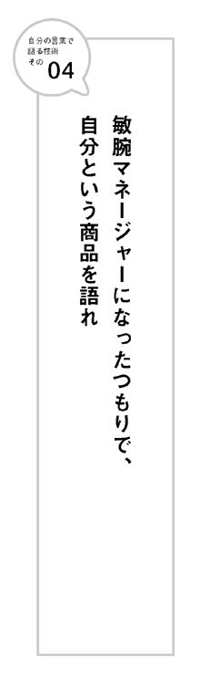
05 コピペの言葉では、人のキモチは動かない
あなたのまわりにこのような人はいませんか？
ひと昔前、ミクシィが流行ればひたすらマイミクを増やしていた。数年前はアメブロで読者数を増やし、続いてツイッターのフォロワーをひたすら増やしていた。去年あたりからは、フェイスブックの友だちの数を増やすことにひたすら情熱を傾けている。
流す情報は二次情報ばかり。ネットニュースに載ったような情報にすぐに飛びついて、ありきたりの感想と共にそのまま書く。または、どこかで誰かが言っているような発言を、あたかも自分の言葉であるかのように書く。更新や発言の頻度だけは、やたら多いのも特徴。
このような人は、大抵、人脈の多さを誇ります。友だち、フォロワー、アクセスが多いのが自慢です。数が多いので、その時々で一見影響力があるようにも見えます。特に、新しいメディアが流行りだした頃に顕著です。
しかし、彼らがオピニオンリーダーになるようなことはまずありません。多くの人と繫がっていそうで、実は何の影響力ももっていないからです。
二次情報、つまり「借り物の言葉」では、人の心は動かないのです。
ソーシャルメディアに限りません。普段、会って話をするときも一緒です。初対面の人と話していて、相手の言葉がすべて借り物だな、と感じてしまったら、その時点で相手への興味がなくなるのが普通です。
こう書くと、きっと以下のような反論があるでしょう。
「借り物の言葉」に力がないのはわかった。でも、「自分の言葉」が簡単に出てこないから苦労しているんだ。どうすれば「借り物の言葉」ではなく、「自分の言葉」で語れるかを知りたいのだ、と。
その気持ちはよくわかります。
実は「言葉を借りること」自体に問題はありません。問題は、「そのまま」の部分にあるのです。
言葉を借りてもいい。そこから自分なりにアレンジすればいいのです。
「自分の言葉」は、「自分のアイデア」に似ています。
この世に、新しいアイデアは存在しません。
ジェームス・Ｗ・ヤングは、『アイデアのつくり方』（阪急コミュニケーションズ 今井茂雄訳）という古典的な名著で、「アイデアとは既存の要素の新しい組み合わせ以外の何ものでもない」と断言しています。
「自分の言葉」も同じです。既存の要素の新しい組み合わせで産まれると考えましょう。誰かが語っている言葉であっても、自分の経験から感じたことや本で読んだ知識などを組み合わせると「自分の言葉」になるのです。
人の言葉を自分の言葉にするには、以下のような訓練をしてみましょう。
まず書店に行き、評論や自己啓発などの分野の本で、売れている作家の本をできるだけ多く買ってきます。売れている作家は、多くの人が心の中でモヤモヤと思っていることをうまく言語化してくれている場合が多い。だから、うまく言語化できないあなたが参考にするにはぴったりなのです。
そして買ってきた本を片っぱしから読んでみます。
「これは、自分も同じことを考えていた」という主張には、付箋を貼っておく。
次に作家の言葉を、自分の言葉にする作業をします。
付箋を貼った「同じことを考えていた文章」に手を入れていきます。
作家の主張はそのまま置いておきましょう。
その主張を裏づけるために、文中には、おそらく作家自身（もしくは誰か）の体験談やエピソードが書かれてあるはずです。その部分を、あなた自身の体験や人から聞いたエピソードに置き換えてみましょう。また作家が何かしら比喩を使って説明していたら、別の比喩を使って説明してみるのです。
次にテーマも変えます。作家が書いた文章が「読書」をテーマにしていたら、「音楽」や「映画」の文章にするのです。慣れてくれば、「読書」から「料理」「旅行」など、離れたテーマの文章にします。
さらに結論や主張の部分も、同じ意味でもいいので、別の単語を使ってみます。文中でその作家が使っている独特の言い回しも別の言い回しにします。自分がもっている知識なども加えます。できれば、文章の順番や構成も変えてみるのです。
どうでしょう？
ここまで変えてしまえば、もうあなたのオリジナルの文章や言葉になっているのではないでしょうか？
自分の言葉を見つけるのが苦手な人でも、このようなエクササイズを繰り返しているうちに、自分の意見を組み立てるコツがつかめます。
06 体験は、自分の言葉を産み出す原動力だ
「自分の言葉」を産み出す、一番の原動力は「体験」です。
人がしていない体験を多く積むと、それだけ「自分の言葉」で語りやすくなります。
体験をエピソードとして語るだけで自分の言葉になるからです。特に苦難に満ちた人生を歩んだり、特異な体験をしたりすると、その人しか語れないことが増えます。
だから一般的に、若者よりも年長者の方が自分の言葉で語ることができる確率が高いと言えます。体験の量がモノを言うからです。
学生が借り物の言葉で語ってしまいやすいのは、体験の量が圧倒的に少ないからです。
ちゃんと働いたことがない人間が、いくら仕事のことを「知識」で語っても、自分の言葉になりません。
就職試験の作文や小論文は、いかにテーマと自分の体験を結びつけるかがポイントだと言えるでしょう。
たとえば「流行についてあなたが考えることを述べなさい」という問題が出たとします。あなたなら、何を書くでしょうか？
もちろん、１００％の正解はありません。ただこれはダメというのはあります。
「流行」という現象を分析するような抽象的な内容の文章を書くのは、ダメなパターンの典型です。そんな知識、学生に教えてもらいたいとは、誰も思わないからです。
「流行に流されるべきではない」「流行はうつろいやすい」なんて手垢のついた意見も避けたいところです。
では、何を書けばいいのでしょう？
知識ではなく、自分の体験とからめて書けばいいのです。
あなただけの体験が書いてあれば、オリジナルの「自分の言葉」になります。
そうすれば、「こいつはちょっと違うな」と思ってもらえます。
実は、この「流行について」がテーマの作文、私が就職活動をしていたとき、ある会社で出された課題でした。
私は、当時の自分の体験をからめた文章を書きました。
試験の何カ月か前、たまたま京都・嵐山渡月橋近くの保津川で貸しボートに乗ることがあったのです。
池や湖などで乗ったことはあっても川でボートに乗るのは初めて。もちろん、貸しボートがあるくらいなので、川の流れはゆるやか。でも確実に流れてはいます。
そこでひとつ発見したことがありました。
「川の下流に向かってボートを漕ぐのも意外と力がいる」ということです。
上流に向かって漕ぐのに力がいるのは、誰でも容易にイメージできるでしょう。流れに逆らって漕がなければならないのだから。実際漕いでみてもその通りでした。
一方、下流に向かうのは、楽そうで力がいらないように思えます。
実際に漕いでみると、川の流れに流されてしまって、なかなか自分が思った方向に進んでくれないのです。
「流れに乗って漕ぐのも力がいる」これは、私にとって小さな発見でした。
作文では、まずその体験を書き、そこから「流行」というテーマに繫げました。
流行は川の流れのようなものだ。流行に逆らって生きるのは、ボートを上流に向かって漕ぐように力がいる。確固たる信念をもっていなければできないだろう。私にはそんな信念も力もないし、したいとも思わない。だから流行という流れに乗って生きていくつもりだ。でもただ流されるのは嫌だ。流れに乗りつつ自分の意志で行くべき方向に向かっていきたい。できれば新しい流れもつくっていきたい。それは川の下流に向かってボートを進めるときのように力がいることだろう。だからこそ、自分の軸をしっかりもち、オールを漕ぐ力を鍛えていくつもりだ。流行に乗りつつ、流行に流されないために。
......というような趣旨でした。
なぜ昔の入社試験の作文のことなどを覚えているかというと、書いた瞬間、「作文ってこういう風に書けばいいんだ！」と腹に落ちたからです。作文なんて小学生以来ろくに書いたこともなかったし、誰かにコツを教えてもらったり特別に対策を練ったりしたワケでもありませんでした。
ただ実際に書いているうちに、「自分の体験をテーマに結びつけて書くと、自分だけの言葉になり説得力が増す」というコツをつかんだのです。
その会社は１０００人以上いる応募者を作文だけで20名程度に絞ってから面接し、内定者数名を出すという乱暴な採用方法を取っていました。
私は作文を提出した瞬間、通ったと確信しましたし、実際そうなりました。
07 されど体験は、量だけではない
「自分の言葉を産み出す、一番の原動力は体験だ」と書きました。
だからと言って「体験の量」がすべてではありません。
同じ体験をしても、新しいことを発見できる人もいるし、できない人もいるからです。発見したことをちゃんと「自分の言葉」にできる人もいるし、できない人もいます。年長者でも自分の言葉で語れない人もいるし、若者でも自分の言葉で語れる人もいるのです。
話をわかりやすくするために、例を出しましょう。
就職活動中のＡ君とＢ君がいました。どちらも大阪在住で、東京の同じ旅行会社の面接を受けたとします。
Ａ君は学生時代に世界一週旅行をしました。Ｂ君は海外旅行に行ったことはなく、今回就職活動で東京へ来たのが学生時代初めての旅行でした。
旅行に関する体験の量から言えば、当然Ａ君の方が圧倒的に多い。
「学生時代に行った旅行であなたは何を感じましたか？」という質問が面接官から出たとします。
Ａ君は「世界一周旅行をしました。世界にはさまざまな人がいることを知り、人生観が変わりました」程度の発言しかできませんでした。
Ｂ君は「今回、就職活動で東京へ来たのが学生時代初めての旅行です。何より印象に残ったのは、エスカレーターで人が立っている位置が逆だということ。なぜなんだろう？と調べてみると、１９７０年の万博で海外からのお客さんを迎えるにあたって、大阪が並び方を世界標準に変えたのが起源だと知りました。狭い日本でもこんなに違うんだから、仕事で世界中旅行に行けるようになると、毎日どんな発見があるだろうと今から楽しみにしています」と、自分の体験を中心に語りました。
Ａ君、Ｂ君、どちらが面接官の印象に残るでしょう？
体験を語ったＢ君の方が圧倒的に強い印象を与えます。
多くの学生は、Ａ君のように体験の量を積めば面接に受かるのではないかと考えがちです。大切なのは、「体験した事実」ではなく、そこから何を発見し、どう自分の言葉で表現するかということです。
実際にＡ君は旅行を通じて多くの体験を積んでいるはずです。なのに具体的な「エピソード」を語らず、世界一週旅行をしたという「事実」だけを語ってしまったことで、薄っぺらな人間のように思われてしまったのです。
もちろん旅行の体験に限りません。旅行をサークル活動、バイト、ボランティア、何に置き換えても同じことです。
「○○サークルで部長をやっていました」「こんなバイトをしました」「被災地で３カ月ボランティアをしました」では、何も言ってないのと同じです。そこから何を発見して、何を学んだかの方が大切なのです。
客観的に見ると大した体験をしていなくても、目のつけどころがよければ、体験をした以上の発見を得ることができるのです。
たとえば日常生活でもその気になれば、いろいろな発見をすることができます。
毎日の通勤、通学の道だって、発見できることはいっぱいあります。人は見たいものしか見ていないし、聞きたいことしか聞いていません。特定のことに注意しながら、歩いてみると、さまざまな発見があるのです。
たとえば、モノの裏側を見て歩くというのはどうでしょう？
普通に歩いていると、表側しか見なかったモノも裏側を見ることで、新たな発見があります。あるいは、モノの先端にだけ注目して歩く。あるいは、地面だけを見て歩く。上を見て歩く。
カラーバスと言って、特定の色だけに注目する発想法もあります。
それぞれに今まで気づかなかった発見があるはずです。
発見が多ければ多いほど、自分の言葉が産まれます。
08 視点を増やすと、自分の言葉が増える
目のつけどころは「視点」という言葉に置き換えることも可能です。
多くの視点をもてばもつほど、人と違う発見ができる可能性が高まります。
つまり自分の言葉で語ることができるようになるのです。
人間は自分の現在の視点がすべてだと考えがちです。
他の視点で見るのには想像力が必要です。意識しないと見えません。
背の高さが違うだけでも見える世界は変わります。
幼稚園くらいの子どもの視点になってみましょう。世の中が違って見えるということが実感できるでしょう。
犬や猫の視点、鳥の視点、車椅子に乗っている人の視点、左利きの人の視点。
残業で誰もいなくなったオフィスで、上司の椅子に座ってみましょう。きっと今まで気づかなかったことに気づくはずです。
ひとりの人間でさえ、立場によって視点は大きく変わります。
歩いているとき、クルマに乗っているとき、自転車に乗っているとき、同じ人間でもそれぞれまったく視点が違います。自分が乗っているときには快適な自転車が、クルマに乗っていたり、歩行者の立場であったりするとき、いかに危険な存在に思うかは、体験した人は知っています。
子どもができると、今まで見えなかった風景が見えてきます。今までにない視点で世の中が見えてくるからです。
「駅がいかにバリアフリーになっていないか」「ベビーカーでバスに乗るのがいかに大変か」「赤ちゃんを連れて食事できる店がいかに少ないか」などが、初めて実感できます。
女性であれば、妊娠していたときにはチヤホヤされたのに、赤ちゃんができたとたん、世間から厳しい言葉をかけられることも実感するでしょう。
視点を増やすには、意識して自分の行動を変えてみることが必要です。いつも通りに生活していると、どうしても同じ視点しか手に入らないからです。
たとえば東京から大阪へ出張する場合。今まで新幹線の指定席に乗っていたとすれば、変化させてみましょう。
行きはグリーン車で行き、帰りは高速バスにする。飛行機に乗ってみるのもいい。同じ飛行機でも、ＡＮＡ、ＪＡＬ、格安航空会社に乗り比べるのもおもしろい。実際に乗ってみるとわかりますが、同じ路線でも格安航空会社だと客層がぜんぜん違います。マイレージがあるからと、特定の航空会社にしか乗らないと見えてこないこともあるのです。
海外ではそれが顕著に出ます。
同じベトナムへ旅行したとしても、超高級ホテルに泊まりリムジンで移動する旅と、安宿に泊まりバイクタクシーで移動する旅では、見え方や感じ方がぜんぜん違います。どちらもベトナムなのです。
多くの旅行者は、バックパッカーならば安宿、パッケージツアーなら標準的なホテル、ＶＩＰな旅ならファーストクラスに最高級ホテルというような枠組みの中で旅をします。これでは、せっかく旅行に行っても、多くの視点は得られません。
たとえば、最初は最低ランクの安宿に泊まって、徐々にホテルをグレードアップして最後は最高級ホテルに泊まるという旅はどうでしょう？ これは昔、私が実際よくやっていたアジア旅行の方式です。
徐々にグレードアップしていくと、いろいろな視点も味わえるし、やっていても楽しい。明日はもう少しマシなホテルに泊まれると思うと、お湯が出ないような宿でも我慢できます。
視聴率２００％男の異名をもつ放送作家の安達元一さんは、海外に行くと必ず、その国で一番の高級住宅街とスラム街を訪れるそうです。
意識して視点を増やすようにしましょう。
より多くの視点をもつことで、エピソードが産まれ自分の言葉も増えていきます。
09 正しいことは、大抵つまらない
10年近く昔ですが、今でも印象に強く残るテレビコマーシャルがあります。大滝秀治さんと岸部一徳さんが出演していた水性キンチョールのＣＭです。
お寺の境内で、大滝さんが水性キンチョールを片手に以下のような疑問を投げかけるところからはじまります。
大滝「キンチョールはどうして水性にしたんだ？」
岸部「それは地球のことを考えて空気を汚さないように」
大滝「つまらん！ お前の話はつまらん！」
岸部さんの答えは、正しい答えです。本来メーカーが一番伝えたいことでもあります。だからこそ高い制作費と放映料を払ってＣＭをつくり流しているのです。
それを大滝さんは、「つまらん」というひと言で切り捨てます。
確かに実際つまらないのです。テレビで、伝える側が伝えたいことだけを流している多くのＣＭがつまらないように。
ブログなどで何か意見を書くとき、会議で何か発言するとき、恋人や夫婦で話しているとき、あなたは正しい答えを出そうとしていませんか？ また正しい知識を提供しようしていませんか？
知識を書くだけなら、ウィキペディアに任せておけばいい。
自分の専門知識についてとうとうと語る男は、表面上は「スゴイですね」と女性から言われていたとしても、陰ではウィキペディア君とバカにされます。
正しいことを言ったり書いたりすると、どうしても人と同じことを言ってしまいがちです。それでは、自分の言葉にならないからつまらないし、役にも立ちません。
親が「勉強しなさい。勉強しないといい大学に入れないわよ」と言うのは、ある意味、正しいことです。ただ残念ながら、それで勉強する気になる子どもはいません。
正しいことを語るのは、リスクをおわないこと。だから人の心に響かないのです。
心理学者の河合隼雄さんが『こころの処方箋』（新潮文庫）という本で、以下のような例を挙げています。
野球のコーチが、バッターボックスに入る打者に向かって「ヒットを打て」という忠告をするのは、１００％正しいけどまったく役に立たない。リスクをおっていないからだ。
一方、「相手のピッチャーの勝負球はカーブだからそれを狙え」というのは、１００％正しくないかもしれない。データとしては確率が高くても、相手が裏をかいてくる可能性もあるからだ。
しかしそれが的中すれば、とても役立つアドバイスになる。コーチは正しくない可能性も含めリスクをおって発言している。だからこそアドバイスする意味があるのだ。
つまり「自分を賭けることもなく、責任を取る気もなく、１００％正しいことを言うだけで人の役に立とうとするのは虫がよすぎる」ということです。
自分の言葉で何か発信していこうと思っている人にも、同じことが言えます。
自分でリスクを取ることなく「一般的に正しいこと」を語るだけでは、自分の言葉で発信したことになりません。
つまり、相手の心に響かない、ということです。
10 矛盾をおそれない
文章を書くとき、矛盾を気にする人がいます。
アマゾンの書評などを読んでいると、「53ページと１４７ページに書いてあることは矛盾しているのではないか？」などと指摘するような人もいます。
人間には「一貫性の法則」という性質があります。自分の態度や信念はできるだけ一貫したものでありたいという欲求です。だから矛盾はできるだけ避けたいと思っています。
しかし、人間は矛盾を抱えた生き物です。
あなたという人間の中にも、おそらく数多くの矛盾があり、その矛盾を抱えながら生きているのではないでしょうか？
明るいけれど、暗い。
ナマケモノだけど、頑張り屋さん。
アキラメが早いけど、粘り強い。
人が好きだけど、ひとりも好き。
楽観的だけど、くよくよ悩む。
ほめられるのが好きだけど、ほめられるのが恥ずかしい。
占い師は往々にして右記のような言葉から相手の様子を探ります。
ほとんどの人に当てはまる性質だからです。
文学作品も、人間の矛盾を浮き彫りにすることで、人の心を動かします。
ドラマや映画でも、好きになってはいけない人を好きになるという矛盾があるから、おもしろいのです。
あなたの書く文章や発言に、多少矛盾があってもかまいません。
矛盾をおそれていると、自分の言葉で語れません。
『古事記』を読んだことがあるでしょうか？
日本の神様たちの物語。
登場する神々たちは、神様という言葉のイメージとはほど遠い。みんな人間くさく、でたらめで矛盾した行動を取ります。モラルなんてまったくありません。
最高神アマテラスの弟のスサノオは、神聖な神殿でうんこをしてそれをまき散らします。ひもじい道中で食べ物をくれた相手を、口から食べ物を出したから失礼だという理由で切り殺します。
そんな無茶苦茶なスサノオは、のちに八岐大蛇を退治して、古事記最大のヒーローになるのです。
アマテラスにしても、スサノオの行動に腹を立てたからと洞窟に引きこもってしまい、世の中を闇にしてしまいます。
他の神様たちも、人格（神格？）を疑われるような行動ばかり。さっき言っていたこととまったく違う矛盾した行動もよく取ります。
でも、それがゆえに神様たちは非常にいとおしく魅力的なのです。
ストーリーも矛盾だらけ。
だから抜群におもしろい。
矛盾をおそれてはいけません。
人生のおもしろさの多くは、矛盾の中にあるのです。
自分の言葉で語るとは、「矛盾上等」という覚悟をもつことです。
11 文章は間違っていてもかまわない
書店に行くと文章術の本がたくさん出ているのに気づくでしょう。
読むと「うまい」「正確な」文章が書けるようになるらしいです。
これだけ出版されているということは、文章をうまく書けるようになりたいと考える人が多いということです。なんとも不思議な気分になります。
そもそも「うまい」「正しい」文章なんて必要あるのでしょうか？
本を出したり、雑誌で連載をもったり、書くことでお金をもらう仕事であれば、できるだけ「うまく正確な文章」を書く必要があるでしょう。しかし、ビジネスや日常生活で普通に文章を書くだけであれば、「うまい正確な文章」なんて必要ありません。
ビジネスや日常生活において必要な文章力は、単純化すると以下の２つの目的に集約されます。
①相手に自分の気持ちをわかってもらう。
②相手に自分のお願いをきいてもらう。
つまり、受け手に共感してもらう、ということ。
目的さえ達成できれば、「うまい文章」かどうかは、どうでもいい。
もっと言えば「正しい文章」でなくてもいい。
どんなにうまい正しい文章を書いても、読み手が共感してくれなければ、何の役にも立たない。大切なのは、「共感してもらえる文章」を書くことです。
ラブレターで考えてみればよくわかるでしょう。
正しくうまい文章で書かれたラブレターに心が動くでしょうか？
それよりも、グッとくる一行がある方が、よほど心が動きます。
正確さが必要なビジネス文書もあります。
そんなものが書けたからと言って、誰も評価してくれません。
普通だからです。
正確なビジネス文書は書けないけど、誰かに何かを依頼する手紙やメールは抜群にうまい。ブログの文章がユニーク。ツイッターで人に絡んでもらえる。などといった人の方が評価されます。
自分の言葉を書くのが苦手だと思っている人は、文章を正しくうまく書こうという意識は捨てましょう。
何よりも伝えたい気持ちをストレートに出すのです。
うまく正しくてもおもしろくない文章に比べたら、ヘタでも間違っていても共感できる文章の方が、何万倍も魅力的です。
12 スピーチは朴訥で下手な方がいい
多くの人はスピーチが上手な人に憧れます。
しかしスピーチがうまい人の話がよく伝わるとは限りません。
立て板に水であまりに饒舌でうますぎると、逆に警戒心が芽生えて、言葉が心に入ってこないのです。
ちょっとくらい朴訥で下手な方がいいくらいです。
数年前、あるスピーチの全国大会に招待され見学に行ったことがあります。
多くの人が流暢に喋る中、一番心に訴えかけてきたのは、日本語がたどたどしいフィリピンからの留学生のスピーチでした。
彼女は日本語が下手でも、どうしても伝えたいことがしっかりあったからです。
伝えたいことがしっかりあるスピーチは、少しぐらい話し方がヘタでもメッセージが心に届いてきます。
一時期、多くの経営者のスピーチを集中して聞く機会がありました。
そこで気づいたのは、講演慣れしている方のスピーチは意外に心に響かないということです。むしろ訛りそのままに、たどたどしく喋る方が説得力があります。
大切なのは、伝えたいメッセージをしっかりもち、あなたのキャラクターに合った話し方をすることです。
２０１１年度のアカデミー賞で作品賞をはじめ４部門獲得した「英国王のスピーチ」は、イギリスのエリザベス女王の父ジョージ６世の実話を元にした物語です。
小さいころから吃音障害があり、人前でスピーチをするのが大の苦手の王子が、オーストラリア出身の型破りな言語療法士ライオネルの助けを借りて障害を克服していくというストーリー。
ラストは、国王ジョージ６世になった主人公が、第二次世界大戦開戦を国民に知らせるラジオスピーチに立ち向かうシーン。
ヒトラー率いるナチスドイツとの開戦に揺れる国民の気持ちをひとつにまとめ上げるという重要な役割をするスピーチです。
ライオネルの指導の元、ひと言ひと言、必死の思いで原稿を読む国王。
最初はたどたどしく読むのがやっとだった国王ですが、徐々に気持ちがこもっていき、人の心を揺さぶるようなスピーチになっていきます。
どんなにたどたどしくても、気持ちが入ったスピーチは多くの人を動かすのです。
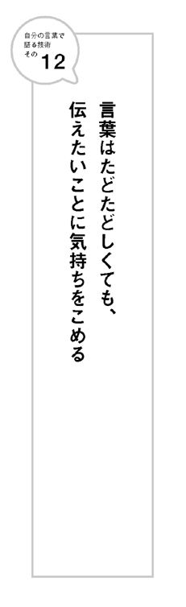
13 会議に風穴を開ける勇気
会議などで行き詰まったとき、誰かのひと言で、急に展開が広がることがあります。
とはいえ、沈滞した空気のときに、何か言うことは勇気がいります。
つまらないことを言うと「馬鹿なんじゃないコイツ」「空気読めよ」とか思われそうだから。
そんなとき、勇気を出して言った言葉は、「自分の言葉」になる可能性が高くなります。
以前、こんなことがありました。
「数時間座っているだけでいいので会議に出てくれませんか」と言われて、あるテレビのバラエティ番組の会議に呼ばれたのです。番組プロデューサーと別の仕事をしたのですが、形にならず、ギャラをその番組の項目として支払いたいという理由でした。
数カ月後にはじまる新番組の会議でしたが、かなり行き詰まっているようでした。もう３カ月くらい会議を繰り返しているのに、まだコレという形になっていない様子です。「主婦の井戸端会議」というコンセプトだけは決まっていて、実際に結婚しているタレントをあてはめてみたりしますが、どうも新鮮さがないのです。
私が出席したその日も、みんな行き詰まっていて空気は最悪でした。
20人近くの人間が円卓を囲んで難しい顔をしています。
言われた通りおとなしく黙っていようかと思いましたが、ふと思いついたことがあったので口に出してみました。
「手垢のついたタレントよりむしろ、芸能人の奥さんで普段テレビに出ない人が出てると視聴者は見たいって思うんじゃないですか？」と。
空気が一瞬固まりました。素性がよくわからない人間が突然発言したからです。
そのまま流されて別の話題に行きそうになったとき、編成局の人間が口を開きました。「それアリだよ。アリアリ」
そこから空気が一気に変わりました。
どんな芸能人の奥さんなら見たいか。また誰ならキャスティングは可能か。それだったらこういう見せ方もあるね、などなど。話が一気に膨らみ具体化していったのです。
数カ月後、その番組は形になりそこそこの視聴率を取りました。
私が口に出したアイデアは大したものではありません。
同じ意見が出ていない方が不思議なくらいでした。
にもかかわらず、沈滞していた空気が、たったひと言で大きく進展したのです。
沈滞した空気の部屋に風穴をあけることは勇気がいります。
いつも成功するとは限らない。
空気を読みすぎると発言できません。
それでも勇気をもって発言しましょう。
その積み重ねが自分の言葉を産むのです。
14 中学生アイドルのブログが
大反響を呼んだ理由
２０１１年３月11日、東日本大震災を境に、日本を取り巻く環境や空気は大きく変わりました。そこであぶり出されたのが、自分の言葉で語ることができる人と、そうでない人の違いです。
自分の言葉で語ることができる人の「言葉」には力があり、借り物の言葉でしか語れない人の「言葉」には力がありません。自分の言葉で語る人はリスペクトされましたが、借り物の言葉でしか語れない人は軽く見られたのです。
震災から10日あまり。ひとりの中学生アイドルのブログが注目を浴びました。
彼女の名前は藤波心さん。
ブログ「ここっぴーの★へそっぴー」の３月23日のエントリーがきっかけでした。
「非難覚悟で・・・」というタイトルで原発をテーマに書いた文章がツイッターを中心に広まっていき、３日間で３００万ＰＶを記録。大注目を浴びました。
作家の高橋源一郎さんが「地震発生以来、ぼくが読んだもっとも知的な文章」と絶賛し、孫正義さんは、「官房長官やら東大出の御用学者なんかより、14歳のアイドルのほうが的確な意見を述べている」というツイートに「同意！」と表明しリツイートしました。
賛同や称賛の声があがる一方、彼女への中傷や非難のコメントも殺到し、ブログはいわゆる炎上をしました。
内容は当時の原発報道「ただちに影響がない」「基準値以下だから安心です」と安全性ばかりを強調するテレビ報道に対する素朴な疑問です（以下、ブログより引用します）。
個別の数値は低くても、
ただちに健康を害することはない？ 量だったとしても、
（中略）
微量＋微量＋微量
イコール→??（中略）
計算私あまり得意じゃないけど・・・・
影響があることくらい、
バカな厨房２年の私でも分かるのに!!
続いて原発を廃止したときの社会システムについても答えを用意します。
じゃあ、原発廃止したら、足らない分の電力は
どうするんだって、言うけど、
それの答えは簡単。
今の原子力に頼らない電力の生活に
社会全体のシステムを変えればいいのです。
変えれますよ。
特に根拠を示しているわけではなくても、こうやって言い切ると小気味いいです。
その後、はさまれる病院の駐車場や麻薬などの比喩も巧みです。
さらに以下のような本音を明かしてエンディングへと向います。
しょーもない、Ｂ級アイドルの私が
偉そうなこと言えた立場ではないことは、
よくわかってる。
電力関係・原発推進関係に携わっている人も多いから、
アイドルとしての立場の私は、賛成か反対かは
あまり明確にしない方が、本当は良いのかも知れない。
ラブ＆ピース がんばろう日本！
みたいなことだけ言ってた方が、
アイドルとしては活動しやすいのかもしれない。
冷静に自分のポジションを分析している部分も説得力があります。
このブログが大きな反響を得たのは、何よりもみんなが思っていたことを代弁したからです。発信者が中学生アイドルであったという意外性も大きい。
噓くさくない。
逃げ道をつくっていない。
ちゃんと自分の言葉にピリオドを打っている。
そんな気持ちが伝わってきます。
ちょうど同じ頃、「自分たちが経済をまわしていかないと」という言葉が流行りました。自粛しないで花見を開催しよう、外食しようという文脈で、です。
外食産業や観光業の落ち込みは激しかったので、意図はわからなくはありません。
ただ多くの人は、何となく便利な言葉なので使っただけです。
実際、花見をしながら「自分たちが経済をまわしていかないと」などとテレビで語っている人は、あまり賢そうには見えませんでした。
理由は明白。それが借り物でコピペの言葉だからです。
「自分の言葉で語る」ことは、川を渡って向こう岸に行くようなものです。
川を渡るのは勇気がいります。
途中で流れに足をすくわれるかもしれないし、深みが待っているかもしれない。恐怖があって当然です。
借り物の言葉を使ってこちらの岸にいれば安全で誰からも批判されません。
それでも藤波さんは川を渡ろうと決めたのです。
その勇気が多くの人の心を揺さぶったのです。

15 ＡＣのコマーシャルに
違和感を覚えた理由
東日本震災後、テレビでいきなり注目を浴びたのがＡＣジャパン（公共広告機構から改称）のＣＭです。
ＣＭは大きく２つにわけられます。震災前につくられていたもの。震災後につくられたもの。震災前につくられていたＣＭに罪はありません。あんなにも大量に流されることは誰も想定していなかったでしょうから。
金子みすずさんの『こだまでしょうか』や宮澤章二さんの『行為と意味』から言葉を借りたものなどは、詩集も随分と売れたようです。魔法の挨拶ポポポポーンも話題になりました。ただ、流される回数が多すぎました。
津波や原発事故の深刻な報道の後に暗いトーンのＣＭや間の抜けたような明るいＣＭが流れたことで、苦情も多く寄せられました。
そこで新しくつくられたのが、さまざまなタレントやスポーツ選手を起用した「日本の力を、信じている」というキャッチコピーのＣＭ。
「あなたはどんなときもひとりじゃない」「僕らがみんながついてます」「助け合う心をなくさないようにしよう」「間違った情報に惑わされないようにしよう」「むやみに買い占めるのはやめよう」「その電話必要ですか？」「被災地の人の気持ちになって考えてみよう」「ひとりじゃない。日本がひとつのチームなんです」
一つひとつのメッセージは正しいことかもしれません。
だから反論はしにくい。
しかし、まったく心に届いてこないのはなぜでしょう。
出演しているタレントの皆さんは、みんなボランティアです。善意で出演してくれているのです。制作したスタッフも、日本を勇気づけようと思って企画し制作しているに違いありません。なのになぜ心に届かないのか？
それはやはり「言葉」の問題です。
頭で考えた「言葉」だから、心に届いてこないのです。
１９９５年の阪神大震災の直後、電通関西支社によってつくられた公共広告はインパクトがあり、高い評価を得ました。
井戸の近くにある「水、自由に使ってください」という張り紙だけが荒いビデオカメラの映像で映し出されます。そして「水、出てるよ、もってって。だけど生で飲まんとってな。ポンポン壊すよってに」という声が繰り返し入るというもの。
「人を救うのは、人しかいない」というコピーも印象に残りました。
このＣＭがつくられたきっかけは、大震災から数日後の日曜日の夜、電通関西支社のクリエイティブの責任者だった堀井博次さんの家に入った一本の電話からでした。電話に出ると、相手は上司の支社長。いきなりこう聞かれたのです。
「今、流れている公共広告どう思う？」
当時も今回の東日本大震災のときのように過去につくられた公共広告のＣＭが大量に流れていたのです。支社長はそんな状況に違和感を覚えて電話をかけてきました。
２人はもっと被災者が元気になるようなＣＭが必要だと意見が一致し、企画をスタートさせることになりました。
企画チームの中にも被災した人間がいて「駅まであと15分、頑張って！」という張り紙に勇気づけられたというエピソードが出ました。「それや、張り紙や」ということになり、翌日にはスタッフがビデオカメラをもって、神戸に入ったのです。
そうやってできたのが、井戸水のＣＭ。
リアルな本物の張り紙だったからこそ、力をもったのです。
今回の東日本大震災の公共ＣＭに話を戻します。
タレント総出のボランティア出演などに頼る必要などなかったのです。
被災者の立場と、きらびやかなタレントとの間は距離が遠すぎます。どんなに善意で出演しても、立場が違いすぎるのです。「僕らがみんながついてる」って言われても...... というのが正直な感想でしょう。
たとえば、ビデオカメラ一台だけ抱えて被災地へ行く。
被災した人の表情と生の声を撮影する。
今、被災地には何が本当に必要なのか？ 政府や自治体に考えてほしいこと。地震に対する気持ち。失われた故郷に対する気持ち。明日に向けた希望。被災地以外のみんなに対するメッセージ。それらを編集せずにそのままＣＭにする。
いろいろなバージョンを制作し、タイムリーなものからどんどん流していく。
東京の会議室で何人集まって頭をひねっても、絶対に思いつかない「言葉」が産まれてきたような気がします。
心を揺さぶる、本当に意味でみんなに勇気を与え、被災地を応援するような公共広告が誕生したはずです。
16 あなたがチェーンメールを
まわしてしまった理由
東日本大震災とそれにともなう原発事故。
過去のいかなる災害にも増して、個人個人がどの情報を信じ、どの情報を元に行動するかが問われました。
被災地のみならず、東京などにおいても、地震当日は携帯電話が繫がらない状況。そんな中で、ネットの情報、特にツイッターでの情報が大きなよりどころになった人が多かったのです。
ツイッターは自分がどういう人をフォローしているかによって、現れてくるタイムラインがぜんぜん違います。受け取る情報にも大きな偏りがあるのです。
大量の情報の中から必要なものを収集し、分析・活用するための知識や技能。すなわち情報リテラシーの有無が問われました。
問題になったのがチェーンメール。
もっとも有名なのが、以下の有毒な雨が降るというものです。
○○石油の工場に勤めている人から教えてもらったのでみんなにも伝えるね。
千葉、首都圏の方へ。千葉の製油所の火災の影響で千葉、首都圏では、化学薬品の含まれた雨が降ることが予想されます。 傘やレインコートの使用をお願いします！ 肌を露出して雨に当たらないように。広めて！ とりあえず広めて！
実際のメールでは、友だちのお父さんが○○石油に勤めていたり、医師会からの知らせだったり、厚生労働省からのお知らせであったり、さまざまなバリエーションがあったようです。ツイッターでもリツイートされ、どんどん広まっていきました。
火災になったタンクの中身はＬＰＧガスで、有害な雨になることはなく、メールは完全なデマでした。
しかし多くの人は、これを信じて、もしくは半信半疑ながらも、知り合いにメールをまわし拡散させてしまいました。特に小さな子どもをもつママ友同士の間では爆発的に広がっていったのです。友人や知人や子どもたちが被害にあわないようという善意から。
友だちがわざわざ伝えてくれるのだから確実な情報に違いない。文面にも工場に勤めている人から聞いた情報だと書いてある。大変だ。これは私も誰かに伝えなければ。
......というような心理が働いたのでしょう。
また情報をまわすことで人助けしたという満足感を得られます。
他にも、【拡散希望】というタグをつけて、多くの不確かな情報がツイッター上で飛び交いました。
たとえばあなたが以下のようなツイートを見たら、どのような行動を取ればいいのでしょう？
「【拡散希望】友人の友人が××（場所）で大怪我をして助けを求めています。救急車が来ません」
ツイッターであれば、リツイートすることで簡単に拡散できてしまいます。人助けした気分も味わうことができます。
それがただの自己満足にすぎないのは、言うまでもないでしょう。
冷静になって考えてみましょう。それだけ逼迫した状況であれば、ツイッターで拡散させるよりも、まず最初に情報を受け取った本人が消防や警察などしかるべき機関に連絡することが大切です。
多くの人が知れば解決に向かうという考え方もあるかもしれませんが、実際は逆。
たとえば、道で誰かが倒れていた場合、まわりに自分しかいなかった場合と大勢の人がいる場合を比べてみれば明らかです。
自分ひとりしかいなければ、助けるなり通報するなりという行動にうつす場合が多い。逆にまわりにたくさんの人がいれば、自分がやらなくてもいいやと、見て見ぬフリをするのです。
さらに事態がいつ起こっていることかも不確かです。もう既に解決したことであれば、何度も通報することは、より多くの混乱を招きます。
送られてきた情報は、まずちゃんと精査することからはじめましょう。
そのまま広げるような行為は、まさに自分の考えをもっていないからできる行為です。それがたとえ善意から出たものであっても。
17 中学生の答辞が大きな感動を呼んだ理由
東日本大震災から10日あまりたった３月22日。津波により甚大な被害を受けた宮城県気仙沼市で、階上中学校の卒業式が行われました。卒業生代表の梶原裕太君が涙を必死でこらえながら読んだ答辞は、当日夜のＮＨＫニュースで取り上げられ、多くの人の心を大きく揺さぶったのです。以下が答辞で語られた言葉です。
「階上中学校といえば、防災教育と言われ、
内外から高く評価され、十分な訓練もしていた私達でした。
しかし、自然の猛威の前には人間の力はあまりにも無力で、
私達から大切なものを容赦なく奪っていきました。
天が与えた試練というには惨すぎるものでした。
つらくて、悔しくて、たまりません。
しかし、苦境にあっても、天を恨まず、
運命に耐え、助け合って生きていくことが、
これからの私達の使命です」
階上中学校卒業生代表 梶原裕太
この答辞は、多くのブログやツイッターで取り上げられ、ニュースの映像はユーチューブなどで繰り返し見られました。
「中学生なのに自分の言葉で語っていてスゴイ！」
「こちらが勇気と感動をもらった」
「こんな若者がいるなら日本の、東北の未来は安泰だ」
多くの評論はそんな感じです。
確かに「天が与えた試練というにはあまりに惨すぎる」「苦境にあっても天を恨まず」など、彼らの立たされている状況を考えると胸がつまり、心が揺さぶられる言葉です。
ただ冷静に分析すると、特別ものすごいことを言っているワケではありません。
ではこの言葉のどこが、人の心を揺さぶるのでしょう？
それはオフィシャルな場面であるにもかかわらず、感情を言葉にのせてストレートに語っているところです。
一般的に言って、言葉に感情を乗せると人の心を揺さぶる可能性が高くなります。人の感情は、他の人の感情を刺激するからです。
ただし、普段の会話でそれを多用するのは危険。ただ感情的な人と思われてしまう可能性が高いし、少人数だと相手も感情的になってしまいます。
一方、オフィシャルな場面では、言葉に感情を乗せることは極めて有効です。一般的に、そのような場面では、ひとりが多数に向けて語るので、少しくらい感情を入れて語るくらいでないと、伝わっていかないのです。
感情が入ってない話は、余程おもしろくないととても退屈です。
２００１年大相撲夏場所の千秋楽、重傷の怪我をおして出場し優勝した横綱貴乃花に、内閣総理大臣杯を授与した小泉純一郎首相（当時）が語った言葉を記憶している人は多いでしょう。
「痛みに堪えてよく頑張った。感動した。おめでとう」
文字にすると、小学生でも言えるようなフレーズです。
ただ普通ならば紋切り型の祝辞を述べるところに、感情を乗せた言葉で語ったことで、強く印象に残りました。
オフィシャル場面では、少しくらい言葉に感情を乗せるくらいでちょうどいい。
感情を乗せることで普通の言葉が「自分の言葉」になるのです。
18 「比喩」や「たとえ話」で、
上手に惹きつける
オリジナルの「比喩」や「たとえ話」は、それだけで「自分の言葉」になります。
「比喩」や「たとえ話」をうまく使うと、物事が感覚的に理解しやすくなり、記憶にも残るからです。
講演などを聞きに行って、他の話はすべて忘れてしまったのに、うまいたとえ話だけが記憶に残っている、なんて経験がきっとあるでしょう。
話がうまいと言われる人の多くは、「たとえ話上手」なのです。
元サッカー日本代表監督のイビチャ・オシムさんも比喩やたとえ話の名人でした。彼の発言がもてはやされたのは、「たとえ話力」による部分が大きい。
２００６年、日本代表監督に就任してまもなく、Ｊリーグのクラブ担当者会議が開催され、オシムさんも要請を受け出席しました。当日はオシム流の代表メンバー発表などにクラブ側の反発が予想されていたのです。
そんな中、オシムさんは会議の冒頭、以下のようなあいさつをしました。
「私の経験上、クラブとサッカー協会は対立するものです。だが、日本のサッカーの発展を考えるならば対立するべきではありません。我々は同じ皿の上の飯を食べているのです。利害が一致しないからといって料理につばを引っかければ、その料理を自分も口にしなければならないのです」
このたとえ話に、クラブの担当者は、「確かにそうだ」と心をつかまれました。
オシムさんの適切なたとえ話のおかげで、予想された対立ムードはまったく生まれなかったのです。
では、どうすれば、「比喩」や「たとえ話」を上手に使うことができるようになるのでしょう。
もちろん巧みな比喩やたとえ話をすぐに思いつく人もいます。
すぐに思いつかない私たちは、事前に準備をしたり、訓練をしておきましょう。
スポーツ界でもうひとり比喩がうまいと言えば、元プロ野球監督の野村克也さん。
野村さんの代名詞になっている「月見草」という言葉。
現役時代、史上２人目の６００号ホームランを打ったときに語った、以下のコメントが元になっています。
「王や長島が太陽の下で咲くヒマワリなら、オレは夜にひっそりと咲く月見草のようなもの」
この有名なコメントは、何カ月も前から準備されていたものでした。
当時、人気のなかったパリーグにいた野村さんは、印象に残るコメントをしないと誰からも注目を浴びないと考えたのです。
そこで何カ月も前から、何かいい言葉がないかを探しました。
野村さんは、太宰治の『富嶽百景』にあった「富士には月見草がよく似合う」という一節に出会って、これだとインタビューまで温めておいたのてす。
このケースのようにあらかじめ語るべきときがわかっているときには、気の利いた比喩を準備しておくといいでしょう。
一方、咄嗟のケースでも比喩が出てくるようにするには訓練しかありません。
まずは、できるだけ自分が得意な分野でたとえてみる練習をしておきましょう。
料理やスポーツなどにたとえると、比喩にしやすいことが多いです。
私もコピーライターという仕事柄、人から「キャッチコピーってどうやってつくるのですか？」という質問を受けることがよくあります。
そんなとき、「料理」のたとえ話をします。
「キャッチコピーのつくり方は、料理のつくり方に似ています。まず記憶という冷蔵庫に入っている言葉を取り出して、いろいろと組み合わせを考えます。さらに生のまま出すか、はたまた焼く煮る蒸すなどの調理法を考えます。まだ何か足らないと思うと、調味料やスパイスを振りかけます。で、おいしいキャッチコピーのできあがり。でもどんなに料理の腕を磨いても、そもそもの材料が腐っていては話にならない。逆に新鮮ならそのまま出すのが一番おいしい。だからまずは、冷蔵庫からどんな言葉を取り出すかが大切です」
あなたも、自分の仕事をわかりやすいたとえ話にしてみることからはじめましょう。

誰かを説得しようとするとき、「議論」をしても無駄だ。
人間関係やコミュニケーション研究での先駆者であるデール・カーネギーは、長らく読み続けられてきた古典的な名著『人を動かす』（創元社 山口博訳）で以下のように述べている。
「議論に勝つ最善の方法は、この世にただ一つしかない。その方法とは――― 議論を避けることだ。毒蛇や地震を避けるように議論を避けるのだ。議論は、ほとんど例外なく、双方に、自説をますます正しいと確信させて終わるものだ」
......どうでしょう？
何となく文章に説得力があったのではないでしょうか？
私自身の文章によって生じたものではありません。
冒頭の一行の言葉だけならば「本当？」という感じが否めません。
説得力はデール・カーネギーの引用文によって産まれたのです。
このように「有名人や偉人の名言」を引用すると、信頼度や説得力が増します。
理由は以下の二点です。
一点目は、名言自体がもつ力。
名言とは、時代を経ても人から人へと伝えられているフレーズ。名言自体に人の心を動かす力があるのです。
二点目は、人間が「権威」に弱いという事実。よく知らない書き手の書くことは信じなくても、誰もが権威と認めた有名人や偉人の名言は信じます。
つまり、名言を引用することで、有名人や偉人が隣に座っているのと同じ効果があるのです。特に短い文章、たとえば大学入試の小論文など字数が決まった文章を書くときには、名言を引用することはとても有効です。
自分の主張をコンパクトに支援してくれるからです。
文章に限りません。人前で喋るときも同じです。
自分の意見の前後に名言を引用すると信頼度や説得力が格段に増します。
だからと言って、何でもかんでも引用するのは逆効果です。
自分の言葉がないように感じられてしまうからです。
ポイントは、名言を主役にしないこと。
あくまで主役はあなたの意見。
名言はそれを補強してくれる助演の役割を果たしてもらうのです。
20 五感を総動員して語る
五感と呼ばれるものがあります。
一般的には、「視覚」「聴覚」「嗅覚」「触覚」「味覚」をさします。
あなたは自分の中でどの感覚が一番鋭いと思いますか。
実は人によって、優位な感覚は違うのです。
たとえばあなたは「病院」という言葉を聞いて何を思い浮かべますか？
①病院の建物、診察室、病室などの映像をイメージした。
②医者や看護師のセリフ、院内のアナウンス、救急車のサイレンなど、音や言葉に関することをイメージした。
③消毒薬のにおいや注射を打たれるときの痛みなど身体感覚的なことをイメージした。
①を選んだ人は、物事を映像でとらえるので視覚優位型。
②を選んだ人は、物事を音や言葉でとらえるので聴覚優位型。
③を選んだ人は、物事をにおいや皮膚感覚などでとらえるので身体感覚優位型。
人間は大きくわけると「視覚優位型」「聴覚優位型」「身体感覚（嗅覚触覚味覚を統合した名称）優位型」の３つにわけらるのです。
普段、我々が文章を書いたり、人前で喋ったりするときには、どうしても自分が優位な感覚で語ってしまいがちです。
優位な感覚は人によって違います。ということは、いろいろな感覚を総動員して書いたり喋ったりする方が、多くの人に伝わるということです。
五感を総動員して語るとき、参考になるのがソムリエの言葉です。
ソムリエは、ワインの味をいろいろな言葉で表現しなければなりません。
ソムリエとして世界的に有名な田崎真也さんは、その著者『言葉にして伝える技術─ソムリエの表現力』（祥伝社新書）で、五感を使って言葉を表現するために、以下のような方法で訓練をすればいいと述べています。
たとえば、休日にどこかの湖に訪れたとします。五感で感じているという意識ができる以前は、なんとなく「きれいな湖」という、ひと言で済ませていたかもしれません。それをもう少し深く、五感を使って、表現するトレーニングをしようというわけです。
（中略）五感それぞれに分類して説明してみましょう。
【視覚】湖畔を見渡すと景色にはどんなものがあるか。湖面に映るものは何か。
【聴覚】鳥のさえずりや風の音など、耳に入ってくる音を聴いてみる。
【嗅覚】花や植物、土や空気など、それぞれがどんな香りを放っているか。
【触覚】肌に触れる水や風の感触。周囲に生える木々や湖畔の砂利に触れてみる。
【味覚】湖に生息する魚や、近くの山々に育つ山菜やキノコなど、その土地のものはどんな味か。
このように五感を意識することによって、いろいろな情報が入ってきます。
その情報を使って言葉にすると、他の人間とは違う言葉になります。
つまりオリジナルの自分の言葉になるのです。
21 つまらない意見でも
最初に言った奴は偉い
たとえば小学校の教室で以下のような問題が出たとします。
「Ａ君とＢ君がいて、２人の前にりんご３個とみかん５個があります。果物を切らずにわけるとき、２人とも納得するわけ方にするにはどうすればいいでしょう？」
生徒たちは正しい答えを見つけようとして、黙ってしまいます。
しかしこれは算数の問題ではありません。
答えは無数にあるのです。
いち早く手をあげたＣ君は、こう答えました。
「２人でじゃんけんをして勝った方が先に好きな果物を取り、次に負けた方が取る。それを繰り返す」
「正解！」と先生。
他の生徒たちは不服そう。そんなのでいいの？
「じゃあ、最初にじゃんけんして、負けた方が果物を２つにわける。じゃんけんで勝った方は好きな方を選ぶ」
「正解」
「みかんは２個ずつ取って最後の１個は手で半分に割る。りんごは１個ずつ取って残り１個は一口ずつかじる」
「正解」
口火を切ったＣ君のおかげで、意見をどんどん出てくるようになりました。
最初に自分の考えを言うのは勇気がいります。
こんな答えでいいのかなと。
つまらない答えでも最初に言ったヤツは偉いのです。
どんなに心で思っていても、先に同じ考えを誰かに言われると、その人の言葉になってしまいます。
「まったく同じことを思っていたんですよ」なんて言っても、もう遅いのです。
ブログなどで何かを意見を書くときも同じです。
世の中の問題の多くは、答えはひとつではありません。
数多くの正解があります。
だから最初に言ったヤツは偉い。
誰かが語る前に、自分の言葉で語りましょう。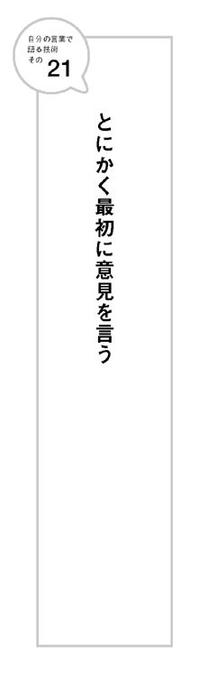
22 人の意見をふくらませる
前述のりんごとみかんをわける問題で、Ｄ君がこんな意見を言いました。
「りんごとみかんをミキサーに入れてジュースにして同じ量をわける」
今まで、りんごとみかんをそのまま食べることにこだわっていたのに、形を変えてもいいということに気づいた素晴らしい意見です。
せっかくそんな意見が出てきたときに、また形にこだわってわける意見を言うのは発展性がありません。
それよりも、出てきた新しい意見に乗っかりつつふくらませることを考えましょう。
「りんごとみかんをミキサーに入れてジュースにして、それを凍らしてシャーベットにしてわける」
確かにＤ君の意見に乗っかってはいますが、ふくらましたとは言えません。
そんなときにＥ君が言いました。
「りんごとみかんを果物屋さんでバナナ10本に変えてもらって５本ずつわける」
Ｅ君は別の形にするというというＤ君に乗っかりつつ、別の果物に変換するというのが新しい。
Ｄ君の意見をふくらましています。
もちろん「正解」です。
Ｅ君の意見が呼び水になって、以下のような意見も出てくるはずです。
「じゃあ、りんごとみかんをチョコレートに代えてもらってわける」
「りんごもみかんも全部売って、そのお金をＡ君Ｂ君でわける」
「りんごとみかんを植えて育てて、できた実を２人でわける」
「りんごとみかんを植えて育てて、できた実をさらに植えて育てて２人で果樹園を経営し、利益をわける」
Ｅ君の答えは、Ｄ君の答えがなければ出てこなかったかもしれませんが、新しい視点を付け加えることによって、オリジナルの考えになっています。
だから刺激されて、さらにいろいろな意見が出てくるようになったのです。
ブログで何か書くときも同じです。
誰かの意見に乗っかる場合は、さらにそれをふくらませて、オリジナルな視点を付け加えましょう。
ただ乗っかるよりも、自分の考えがある人だと思ってもらえます。
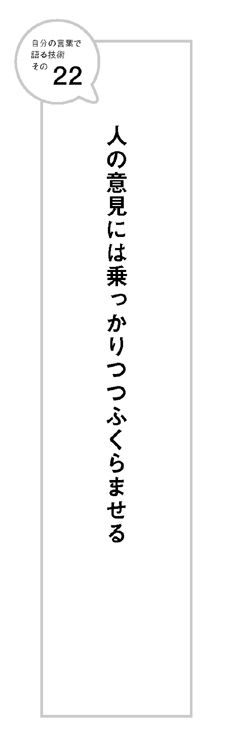
23 次元を変えると自分の言葉になる
「Ａ君とＢ君がいて、２人の前にりんご３個とみかん５個があります。果物を切らずにわけるとき、２人とも納得するわけ方にするにはどうすればいいでしょう？」
Ｆ君は、こんな意見を出しました。
「りんご１個みかん２個ずつを２人でわけ、残りを誰かにあげる」
もちろん正解です。
この正解は今までの正解とは次元が違います。
今までの答えは２人の間でわけるという視点でしか考えてきませんでした。
Ｆ君の意見は、２人以外の別の人間も含めてわけるという考え方です
画期的な意見です。
それでＡ君とＢ君が納得するのであれば正解だからです。
今まで誰も気づかなかったことに気づいたＦ君は偉い。
Ｆ君の発言が呼び水になって、３人以上でわけるという意見が多数出てくる可能性もあります。
「クラス６人と一緒にひとり１個ずつわける」
「ぜんぶの果物をＡ君とＢ君が好きな女の子に贈る」
「すべての果物を売って、そのお金を寄付する」
「すべての果物を植えて育てて、できた実を学校全員に配る」
このような極端な意見が出てくるようになったのは、Ｆ君が次元の違う答えを出したからです。
会議などでいつもＦ君のような意見を出せる人は「できるな」と思われます。
自分オリジナルの考えがあるからです。
ブログなどで何か意見を書くときも、この「次元」を意識しましょう。
既に議論されつくしている話題であれば、次元を変えて語ることができないか考えてみるのです。
そのためには、まずみんなが前提だと思っていることを疑ってみましょう。
前提をくつがえすだけで、新しい次元の考えが産まれる可能性が高まります。
いつも次元を変えた発言ができるようになると、他人から高く評価してもらえるようになります。
24 「たくさん喋れば喋るほど
伝わらない」の法則
結婚式のスピーチを思い浮かべてください。
聞いていて一番うんざりするのが長いスピーチです。
長いスピーチは往々にして何が言いたいのかわからない。途中から、会社や話し手の宣伝になっていたりすることも多い。
そんな人に限って「はなはだ簡単ではございますが」などと言って終わるから始末が悪い。どんなに偉い人のありがたい話でも苦痛でしかない。またその内容もすぐに忘れてしまいます。
逆に、短くて情感のこもったスピーチをした人は、印象もいいし、内容もよく覚えているものです。
テレビで話す政治家のコメントも同じです。
ダラダラと長い話をするだけで結局何が言いたいのかわからない人のコメントは、聞いていてイライラするだけ。
一方、短くはっきりしたコメントをする人の方が、頭がよさそうに見えるし、内容もよく伝わります。
話し言葉に限りません。文章も同じ。できる人の企画書ほど短いのです。
広告代理店やコンサルタント会社が出す企画書は無駄に長い。色鮮やかなグラフやデータでそれらしくデコレーションしてありますが、本当に新しい発見はほとんどない。数行で済むような話をだらだらと引き延ばしているだけです。
企画書は長ければ長いほど、新しい発見はないと考えていいでしょう。
人は長く喋れば伝わると考えがちです。しかし実際は逆。
イメージしてください。初対面にも関わらず何時間も一方的に自分のことばかり話し続ける人のことを。
あなたはその人のことを「魅力的だな」とか「また会って話がしたいな」とか思うでしょうか？ たとえ、どんなにいい人であっても、「うんざり」「もう会いたくない」というのが本音でしょう。
一方的に喋った側にすれば、自分の思いを伝えることができてとても気持ちがいい。たくさん話したから、相手はきっと自分のことをよくわかってくれたはずだと錯覚します。しかし、聞き手の立場になればそうでないことは一目瞭然。
この事実は、話している側は意外にわからないものです
特に話すことに自信をもっている人はその傾向があります。いっぱい話しているから、いっぱい伝わっているはずだと思ってしまいがちです。
このように受け手になればわかることでも、発信する側になるとついついやってしまう失敗は数多くあります。
コミュニケーションというと、「いかにうまく話すか」という発信側の視点で考えがちです。
しかし、本当に人の心をキャッチするには、まず受け手の立場に立って考えることが大切なのです。
自分が話したいことを一方的に話すのではなく、それが受け手にどう伝わるかをまず考えましょう。
少し意識を変えるだけでも、あなたのコミュニケーション能力は、大きく改善されていくでしょう。
自分の言葉で語ることができる人は、スピーチも文章も短い、のです。
25 それ１行にまとめるとどういうこと？
講演会やセミナーなどでは、最後に講師に対して聴衆が質問できる時間を設ける場合があります。
残念ながら、そこで実りのあるやりとりが行われるケースは少ないのが実情です。
よくあるのは、質問者がとうとうと自分の意見を語りだすパターン。講師の話と関係あるようなないような話が続き着地点が見えません。
講師の方も普通であれば、「結局何が言いたいの？」とツッコミたいところですが、多くの人の前なので我慢して聞いています。そしてようやく待って出てくる質問が「え？ そんなこと？」と言いたくなるようなものが多いです。
次に多いのが「質問が３つあります」と言い出すパターン。
そもそも一度に３つも質問されると、講師の方も、他の聴衆も最初の質問は忘れてしまいます。「えーと、最初の質問はなんでしたっけ？」となって時間が無駄になります。質問の場では一回一問が原則です。
どちらの場合も欠けているのが、まわりにいる自分以外の聴衆への配慮です。
講演やセミナーなどの場での質問は、自分が聞きたいことを聞くという気持ちは捨てましょう。多くの人が興味をもっているだろうけど、講師が話してなかったようなことを聞かなければならないのです。
いい質問は、一行でおさまります。
そもそも世の中のほとんどのことは、一行で要約できるのです。
参考にすべきは、ヤフートピックス。
ヤフートピックスは、今や全国紙の１面トップの見出しよりも影響力があるメディアです。多くのネット系ニュースサイトの見出しが、言葉は悪いですが引っかける（サイトに誘導する）ものなのに対し、ヤフートピックスはそうではありません。
情報を一行に要約しているだけ。文字数も全角相当13文字程度と決まっています。
13文字であっても、必要最低限の情報は理解でき、詳しく知りたいと思わせます。
一行だけどおもしろいのです。
ハリウッドでは「一行で要約して、おもしろくない映画はヒットしない」という鉄則があります。
会議などで発言するときも、一行に要約することを意識してみましょう。
一行にすることで、無駄な情報が排除され、一番自分が大切に思っていることに焦点が当たるのです。
一行に要約したときの言葉こそが、「あなた自身の言葉」なのです。
26 タイトルが９割の法則
文章を書くときにはタイトルが重要です。
タイトルで９割が決まると言っても過言ではありません。
本にしても、企画書にしても、プロジェクト名にしても、タイトルが一番難しく、悩むところです。
内容は同じでも、タイトルが変わるとまったく違うものに見えてくることはよくあることです。
学問的にも実証されています。
たとえば、以下のような実験においても、タイトルによって結果が大きく変わってくるのです。
心理学でよく使われる「最後通牒ゲーム」という実験は、以下のようなルールです。
被験者ＡとＢの前に１万円を置く。
実験者はこれを２人にあげるという。
ただし、どうわけるかを決めるのはＡ。
ＢがＡの決めた分配率に納得すれば２人にお金が支払われる。
ＢはＡが決めた分配率を拒否する権利もある。
ただしその場合はどちらにもお金が支払われない。
合理的に考えると、Ｂは拒否すると１円ももらえないのだから、Ａがどんな分配をしようと拒否することは損をするだけです。しかし現実はそうはなりません。取り分が３割を切ると、Ｂは拒否することが多くなります。馬鹿にされたと感じるからです。
Ａとしては、Ｂの気持ちを逆なでしない範囲で、自分の取り分を多くすると得をするのです。
スタンフォード大学の研究チームは、このゲームの名前をいろいろと変えて実験をし直しました。
「ウォールストリートゲーム」と名づけると、Ａがより多くの分配を得ようとする率が高まります。
「コミュニティゲーム」と名づけると、Ａができるだけ公平に分配しようとする率が高まります。
まったく同じ実験でありながら、ゲームの名前が違うだけで、人間の行動は大きく変化したのです。
タイトルをつけるときに、その言葉が受け手にどのような影響を与えるのか、考えてつけましょう。
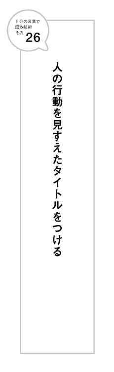
27 サビアタマの法則
小学校でほめられる作文を書く簡単なコツがあります。
うまくいけば、作文コンクールにだって入賞できる方法です。
何よりも大切なのは一行目。
クライマックスを冒頭にもってくること。
できればカギカッコの会話からはじめるのです。
たとえば、「遠足」がテーマの作文ならば、
「えっ！ ケンちゃん、お弁当忘れちゃったの？」
みたいなはじまり方です。
続きも、ケンちゃんがお弁当を忘れたことで、どうなったのか？ その問題をどうやって解決したか？ クライマックスの中で起こった出来事だけを書くのです。
多くの小学生は、遠足ならば行きの電車から時系列の通りに書こうとします。その後も、出来事を時系列にそって羅列していくだけ。
新林公園に行きました。キヨシ君とアツシ君と一緒にお弁当を食べました。その後、アスレチックをしました。
......のような展開。やっと肝心のクライマックスにたどり着いたくらいには息切れして「楽しかったです」というひと言で終わっていたりします。それでは、つまらない。上記のように、クライマックスからはじめると、読み手の心を「なんだろう？」とつかむことができるのです。
続きが読みたくなります。状況説明などは後からでいいのです。
音楽業界で言うところの「サビアタマ」。
「サビ」とは曲の中で一番盛り上がる場所。「サビアタマ」とは、通常、曲の後半に来る「サビ」を、いきなり冒頭にもってきてスタートさせるという手法。
まずおいしい部分を聞かせて、お客さんの心をつかむ、のです。
サビアタマは、小学生の作文だけでなく、あらゆる文章を書くとき、人前で話すとき、すべてに共通して使えるテクニックです。
ブログ、メルマガ、企画書、プレゼン、スピーチでも、サビアタマを意識すると、訴える力が変わってきます。
何よりも大切なのは、一行目。
一行目がおもしろければ、人は二行目を読みます。
一行目がおもしろくなければ、二行目は永遠に読まれないかもしれません。
28 「気持ちは書かない方が
気持ちは伝わる」の法則
小学校でほめられる作文のもうひとつのポイントは、「感情や気持ちをあらわす言葉を書かない」ということです。
たとえば「楽しかった」「悲しかった」「うれしかった」「くやしかった」など喜怒哀楽をあらわす言葉。
小学生の作文にはお決まりのフレーズですね。
学校では「気持ちを素直に書きなさい」と教わります。
だから素直な気持ちを書く。
しかし気持ちを書いて、その感情が伝わるでしょうか？
「感情や気持ちをあらわす言葉」ではその感情は伝わらないのです。
そのような言葉を使わないだけでも、作文は数段グレードアップします。
感情や気持ちをあらわす言葉を書かない代わりに、そんな気持ちになったときのエピソードを書くのです。例をあげましょう。
もうすぐゴールだったのに、コケてしまいました。あんなに練習して絶対に１位だと思っていたのに、くやしかったです。
↓
もうすぐゴールだったのに、コケてしまった。どうやって立ち上がりゴールしたかはよく覚えていない。田中先生は「ドンマイ」と声をかけてくれた。友だちたちも何も言わない。ぼくは近くにあった鉄棒に向かって逆あがりをした。何度も何度もまわった。そうしないと、「あんなに練習したのに」という言葉が口から出てしまいそうだったからだ。
「くやしい」と書いたから「くやしい気持ち」が伝わるわけではない。
むしろ「くやしい」と書かずに、そのときの状況を淡々と書いた方が「くやしい気持ち」はよく伝わるのです。
不思議なことに、こういったことは、小学校の作文の時間では教えてくれません。
「書きたいことを書きなさい」
「自分の気持ちを素直に書きなさい」
などと言われるだけ。そんなことを言われても、普通の子どもは、「楽しかった」「悲しかった」程度のことしか書けません。
文章は自分の気持ちをそのまま書くものではありません。
そのときの気持ちを効果的に見せる演出が必要なのです。
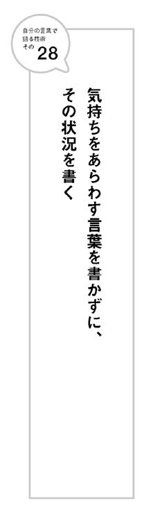
29 決めの１行に命をかける
講演を聞いていて「よかった」と思っても、しばらくたつと内容はほとんど忘れてしまうことが多いのではないでしょうか？
ただし、印象に残る１行があった場合は別です。
その１行はしっかりと記憶に残ります。
アップルのスティーブ・ジョブズの新商品発表会のプレゼンがそうです。
必ずと言っていいほど、印象に残る１行があります。
「１０００曲をポケットに」（ｉＰｏｄ）
「今日、アップルが電話を再発明する」（ｉＰｈｏｎｅ）
「世界で最も薄いノートパソコン」（マックブック・エア）
ジョブズはこの１行に命をかけるくらい考えるといいます。
この１行があるからジョブスのプレゼンはどんどん伝染していくのです。
お客さんが営業マンになってくれるのです。
瞬時のうちに多くの人々に伝わっていくのです。
人前で喋るときには、この「決めの１行」を意識しましょう。
最低限、これだけは残したいという１行をつくっておくのです。
ではどうすれば、このような決めの１行がつくれるのでしょう？
まずは以下の３点を意識することからはじめましょう。
①化学反応が起こる言葉の組み合わせ。
②具体的な数字。
③たくみな比喩。
ｉＰｏｄの「１０００曲をポケットに」というキャッチコピーは、３つの要素がすべてつまっています。
「曲」という形にならないものをあらわす言葉と、「ポケット」という具体的なものをあらわす言葉の組み合わせ。
１０００曲という具体的な数字を入れている点。
実際にポケットに入れるのはｉＰｏｄにもかかわらずそれを「１０００曲をポケットに」という言葉で語る比喩表現。
３つの要素を意識して、決めの１行をつくってみましょう。
30 挫折や失敗を自己ＰＲに使う
「自分の言葉」で自己ＰＲを語れるかどうかで、面接における印象度は大きく変わってきます。
自己ＰＲするとき、「ストーリーの黄金律」を使うと効果的です。
「ストーリーの黄金律」とは、ハリウッド映画やテレビのドキュメンタリーなどでよく使われる手法で、以下の３カ条が盛り込まれた展開になっているものです。
①何かが欠落したもしくは欠落させられた主人公が
②無理ではないかと思うほど遠く険しい目標に向かって
③数多くの葛藤や敵対するものを乗り越えていく
黄金律にかなった組み立てになっていると、人はそのストーリーに自然と心を動かされるのです。
不思議なことに、世界中どこでも共通。
いわば人類共通の感動のツボなのです。
「プロフェッショナル」「情熱大陸」などのドキュメンタリー番組の主人公は、必ず人生のどこかで挫折していたり、失敗体験があったりします。
欠落部分がないと、主人公に感情移入がしにくいからです。
自己ＰＲというと、成功体験を語ることを考えがちです。
実際は、挫折や失敗体験をどう克服したかを語った方が効果的な場合が多い。
自分で自分の成功体験を語っても、面接官は８割引きくらいでしか聞かないものだからです。
失敗からどんな教訓を得たか、またそこからどうやって這い上がったかのエピソードを語ると信憑性が一気に増します。
ストーリーの黄金律の主人公になれるのです。
肝心なのは、挫折や失敗をどう克服したかということ。
単純に挫折や失敗だけを語っても効果は薄いでしょう。
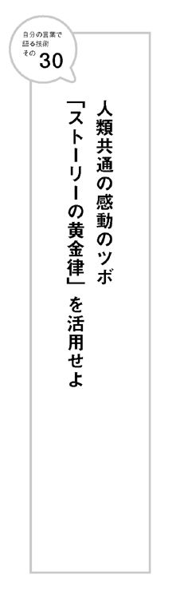
31 現在 → 過去 → 未来
で自己紹介する
何かの集まりで、順番に自己紹介をしなければいけない場合もあるでしょう。
そんなとき、ちょっと工夫するだけで、印象に残り、自分の言葉で語っているように見える方法があります。
自分のプロフィールを「現在」「過去」「未来」の順で語るのです。
自然と「ストーリーの黄金律」にそった物語になるからです。
まず、あなたが「現在」やっている自分の活動を語ります。
次に、どんなきっかけで現在の活動をはじめようと思ったのか、という「過去」のポイントを語ります。
そして、遠く険しい目標に向かって頑張っている「未来」の姿で結びます。
たとえば、あなたが地方都市の書店の２代目だったとしましょう。
こんな風に自己紹介するのです。
私は○○市の駅前で小さな書店を経営しています。親の店を継いだ２代目です。
小学生の頃は本が嫌いな子どもでした。書店なんか絶対継がないと決めていました。
そんな私が「本屋をやりたい」と思うようになったのは、東京での大学生時代、ある人との出会いがきっかけでした。
それは『ブックス・トリフォー』という小さな書店の店長太田さん。太田さんの店は、本のセレクトショップというような店で、何時間いても飽きないのです。隣どうし並んでいる本にすべて意味があり宇宙をつくっているのです。
おかげで私は本を読むようになりました。そして今まで何ともったいないことをしていたかに気づいたのです。本を読むことで世の中の見方がガラリと変わりました。
本は知らないことを何でも教えてくれる先生だったのです。
太田さんのような店をつくりたい。大学を卒業し、実家に戻って店を継ぐことを決意しました。しかし実際に継いでみるとなかなか思い通りにはなりません。ただでさえ、現在書店のおかれている状況はとても厳しいのです。本離れ。大型チェーンの進出。電子書籍の台頭。街の書店はどんどん潰れています。正直不安がないと言えば噓になります。
でもだからこそ、私は自分の店を理想の書店に近づけていけるように日々努力を重ねていくつもりです。皆さんもぜひ一度うちの店に遊びに来てください
どうでしょう？
普通に自己紹介すると、「２代目は気楽でいいね。どうせ何も考えずに跡を継いだんだろ？」なんて思われがちです。
現在 → 過去 → 未来という構成にすると、自然と現在が未来の高い目標に向かう通過点となり、「ストーリーの黄金律」にかなう欠落した主人公になることができるのです。
コツは現在の自分に満足しきっているように話さないこと。
すべてが満たされた幸福な主人公には人は感情移入しにくいものです。単なる自慢話に聞こえ反感を呼ぶ可能性さえあります。
32 自分をアピールするより、
相手のツボを探す
自己ＰＲや自己紹介をする場合を見てきました。
それらは特殊なケースと考えてください。
特別にＰＲする機会が与えられていないときには、自分からアピールするよりも大切なことがあります。
相手のツボを探すことです。
たとえばメディアにプレスリリースを送る場合を想定してみましょう。
多くの人はリリースの内容にばかり焦点をあてます。どのように書いたら効果的だろう。キャッチコピーは何にしようかなど。
それよりも時間をさくべきは、送り先のメディアの情報を収拾することです。
テレビであればテレビ番組を見る。雑誌であれば雑誌を読む。
最低でも最新のもの。可能であれば、過去の番組やバックナンバーにさかのぼって。
そして、視聴者や読者の立場で、番組や記事に対する意見を手紙に書くのです。どれだけ自分が番組や雑誌に注目しているかを。
よいしょするだけではつまらない。かと言って批評になるのはもっての他です。
できればつくり手が気づかない視点で、ひと言、刺さるフレーズを書き添えるのです。
大切なのは具体性とディティール。いかに、自分が相手のメディアについてよく見ているかをアピールします。
もちろん手間はかかります。めんどうくさいです。非効率です。
でも、同じ文面で一斉に送るプレスリリースに比べてはるかに打率がいい。
つまり、非効率だけど、効率的なのです。
プレスリリースに限りません。まず相手のツボを探すことは、何か売り込みをするときには共通の法則です。
売り込まれる側の立場になってみればわかりますが、正直、売り込まれるのにはウンザリしています。ほとんどが、売り込む側自身のことばかり書いてあるからです。
売り込まれる側にとっても、本当に興味があるのは自分のことだけです。
だから、まず相手のことを徹底的に調べる必要があります。
相手のやっている仕事などに対して、どのような言葉で語れば反応したくなるかを考えるのです。
自分のことより、まず相手のことを語るのです。
売り込みに限りません。
１対１のコミュニケーションの場合、自己ＰＲは基本しなくていいと思ってください。相手が自分に興味があれば検索して勝手に調べてくれるはずです。
就職活動でも同様のことが言えます。
自己ＰＲの内容に腐心するよりも、もっと相手の会社のことを調べましょう。
待遇や仕事の内容などという自分に関係あることではありません。
利用者目線での相手の会社の事業について調べて語るのです。
語った視点や言葉が、相手のツボを刺激するものであれば、相手はきっとあなたに興味をもちます。
そうなった段階で、自分が相手の会社にどう貢献できるかを付け加えるのです。
大切なのは、具体性とディティールです。
33 「聴き方」であなたの人生が変わる
面接など自己ＰＲする場面では、「どう語るか」ばかりに焦点が当てられます。
実際は、「相手の話をいかに聴くか」の方がはるかに大切です。
相手の話の聴き方こそが、大きなアピールポイントになります。
「面接官の方ばかりが喋って、ほとんど自分は喋ることができなかったからダメだった」と思っていたら面接に通ったという話をよく聞きます。
私自身の経験でも、若い頃、年長者から「川上君、おもしろいね」などと言われたのは、相手ばかりが喋っていて、自分はほとんど喋れなかったと思ったときでした。
つまり、相手は自分が気持ちよく喋れたことで、こちらをおもしろいと思うのです。
人は自分の話をしたがっているのです。
だから、聴き方がうまいと、それだけで大きな武器になります。
実際、取材などでインタビューされる立場になってみるとわかりますが、相手の質問の仕方やうなずき方ひとつで、話すモチベーションが大きく変わってきます。
本当におもしろいと思って聞いているのか、うわべだけで聞いているのかがすぐにわかるからです。
つまり、話の聴き方も、あなたオリジナルの言葉なのです。
うなずきは、話し相手に向かって「ちゃんと聞いていますよ」というサイン。ちゃんとうなずいて聴くことで、相手は気持ちよく喋ることができます。
実際、うなずきが話し手の発言時間を増やすという実験結果も出ています。
ただし、大げさなのは逆効果です。
よく気がつく人ほどおちいりやすいのが、他のことに気を取られてしまうということ。
喫茶店であれば、店員が商品をもってきてくれたことに早く気づきすぎて、こちらから目線を外すような場面。そんなささいなことでも、話し手の立場になると残念な気持ちになるのです。
真剣に聞いてくれているなと感じたら、あとになってつい喋りすぎたかなと思うことがよくあります。
聞き手の側の立場になると、普通では聞けないような情報が手に入るということです。また相手との間に深いコミュニケーションが生まれる可能性も高まります。
話の聴き方ひとつで、人生が変わることも珍しくありません。
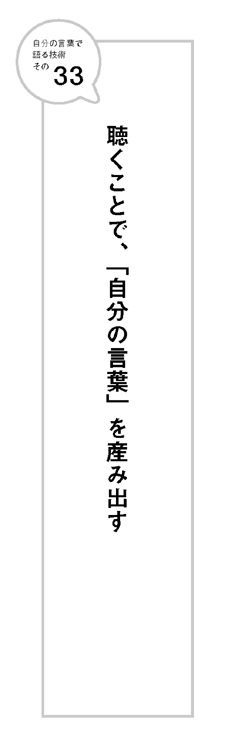
34 相手を取材するつもりで聴く
聴き方が重要なのはわかるけど、実際、どのように聴けばいいかわからないという人も多いでしょう。
そもそも人の話を一方的に聴くというのは苦痛です。
また漠然と聞いているだけでは、滅多におもしろい話題には遭遇しません。
そんなときは、自分自身が取材でのインタビュアー（質問者）になったつもりで、相手から話を聴いてみましょう。
仕事のノウハウ、教訓、情報、エピソードなどを相手から引き出すつもりで会話をするのです。
得意先であれば、彼や彼女の仕事への取り組み方を取材するつもりで聴きます。
部下が相手であれば、最近の若い世代がどういうことを考えているのかを取材するつもりで聴きます。
直接仕事に関係ある事柄でなく、趣味のようなことでもいいです。
取材するつもりで人の話を聴くということは、相手に対して興味や関心を抱くということにほかなりません。うなずき方など話を聴く態度も自然とよくなります。
コツは相手をストーリーの主人公にしてあげること。
ストーリーの黄金律を意識してみましょう。
相手がピンチだったとき、失敗したときのエピソードを聴きます。
そこからどう這い上がってきたかを聴くのです。
そうすると自然と、相手は物語の主人公になります。
35 受け手の言葉で語れ
だれに対しても、専門用語で語ってしまう人がいます。
専門用語で語る人は、本人は「自分の言葉」で語っているつもりでも、人から見ると「借り物の言葉」で語っているように思われます。
「自分の言葉」で語っているかどうかを決めるのは受け手なのですから。
誰かに何かを語るとき、相手が理解しやすい言葉を使うことを意識しましょう。
経営学者ピーター・ドラッカーも、その著書『マネジメント』（ダイヤモンド社 上田惇夫訳）で、こう書いています。
「ソクラテスは、大工と話すときは大工の言葉を使えと説いた。コミュニケーションは、受け手の言葉を使わなければ成立しない」
では、どうすれば受け手の言葉で語れるようになるのでしょう？
「自分の仕事をいろいろな相手にわかるようなたとえ話で説明してみる」というような訓練をしてみましょう。
たとえば、７歳の子供に自分の仕事を説明するにはどうすればいいかを考えます。
学校の「係」にたとえてみる。「ポケモン」や「ドラえもん」のキャラクターを使って説明する。
次に80歳の女性に説明するときを考えてみます。
「家事」「町内会」などにたとえて説明する必要があるかもしれません。
さらに外国人に説明するときも考えましょう。たとえば極端な例で、ケニアの遊牧民族に自分の仕事を説明すると考えてみるのです。
何にたとえて話せばいいでしょう。
意外に自分の仕事の本質が見えてくるかもしれません。
こんな風にして、受け手にわかりやすくたとえる癖をつけておくと、いざというとき、適切なたとえ話が出てくる可能性が高まります。
少なくとも、あなたが受け手の世界に歩み寄ろうとしている努力と熱意は買ってくれるはず。そうすればあなたの話に耳を傾けてくれる可能性は高まります。
池上彰さんのニュース解説がよく伝わるのは、ちゃんと受け手の言葉で語っているからです。
専門用語を使って語る学者に比べると違いがよくわかるでしょう。
受け手の言葉で喋っている池上さんが、もっとも「自分の言葉」で語っているように見えます。
逆説的ですが「相手の言葉」で語ることが、他人から見て「自分の言葉」で語っているように見える秘訣なのです。
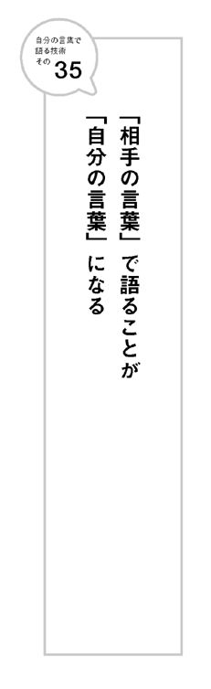
「好きな男の最も曖昧な言葉でさえ、好きでない男の明白な言葉よりも心をかき乱すものである」
これは恋愛について語ったものですが、ビジネスを含め人間関係全般について言えることです。
人は話す相手のことが好きであれば、どんな他愛のない話でも真剣に聴く耳をもちます。逆に話す相手のことを好ましく思っていなければ、どんなにいいことを言っても聞く耳をもちません。
何を話すかよりも、誰が語るかの方が大切なのです。
講師のファンが多くつめかける講演やセミナーなどに、そうとは知らずに紛れ込んでしまったことはありませんか？
はじまる前から熱気が違います。
みんな聴く気まんまんなのです。
ちょっとした前フリでも大爆笑。
このような空気ができあがっていれば、何を語っても「いい話を聞いた」と思ってもらえることでしょう。
一般の人間が、最初から聴衆に好意をもってもらうのは難しいです。
まずは嫌われない。少しでも親近感をもってもらうことからはじめましょう。
私自身、講演で地方都市に行ったときにはまず、その土地の話からはじめます。
何か特定の職業の方の集まりでは、その業界に対する話からはじめます。
お互い共通点がありますよ、ということを語っているのです。
共通点があると、人は親近感を抱きやすいからです。
せっかく自分の言葉で語っても、相手に伝わらないと意味がありません。
少しでも伝わるように、場を温めておくことも大切です。
37 謝罪するときにこそ、「自分の言葉」を
仕事でお客さんからのクレームを受けるとき、謝罪の対応ひとつで、お客さんの態度も大きく変わります。
最悪なのは、マニュアルを読み上げるような対応です。
お客さんの怒りに対して、火に油を注ぐようなものだからです。
謝罪のときこそ、「自分の言葉」で語ることが重要になってきます。
そもそもお客さんの立場になってみると、クレームを言うことはかなりのパワーが必要なのです。
以前、引っ越しをしたとき、ネットの光回線がなかなか繫がらないというトラブルがありました。
仕事のメールも見ることができなかったので、「どうなっているか？」と、何度もプロバイダーに電話で問い合わせる羽目になったのです。
そこで気づいたのは、同じ内容のことを言われても、電話に出る相手によって印象が大きく変わるということでした。
最初に電話したときには、正直プロバイダーを変更しようとさえ思いました。電話に出たスタッフがあまりにお役所的で、自社の都合に立った対応しかしなかったからです。
ところが、次に電話をかけたときに出たスタッフの対応はまるで違いました。
「申し訳ありません。それは大変ですね。何とかできないか技術部門に聞いてみますね」とこちらの立場に立った対応をしてくれたのです。
結論としては、対応に数日かかるということは同じでした。
それでもこちらの気持ちはぜんぜん違いました。むしろ、「いろいろと対応してくれてありがとう」という感謝の気持ちにさえなりました。
謝罪のときには、まず相手と同じ立場に立ちましょう。
自社や自分の立場から語るとより相手を怒らせることになります。
食中毒事件などの不祥事を起こした会社の社長が、「納入した会社のせいだ」と言わんばかりに自社の都合で語ったことがありました。社長が世間からバッシングを受けたのは、被害者のことよりまず自社の都合を語ったからです。
もちろん、謝罪する立場になれば、言いたいこと、言いわけしたいことは、数多くあるでしょう。
でも、まずは、相手の立場に立って謝ることです。
38 言葉にも「重い」「軽い」がある
野球のピッチャーが投げるボールを表現する言葉で「重い球」「軽い球」という言い方があります。
一般的に重い球だと、バッターが打っても飛びにくく、軽い球だと飛びやすいと言われています。
スピードのように実際計測されるわけではない感覚的な言葉です。
ボールと同じように言葉にも「重い」「軽い」があります。
「言葉の重さ」もまた計量できるものではありません。
にもかかわらず、世の中には「重い」と感じる言葉もあれば、「軽い」と感じる言葉もあるのです。
「言葉自体」の問題ではありません。
この言葉を使えば重くなる軽くなるということではないのです。
同じ言葉を使っていても、語る人によって「重く」なることもあれば、「軽く」なることもあります。
同じ人が同じ言葉を語ったとしても、語るタイミングによって「重い言葉」にもなるし「軽い言葉」にもなります。
「言葉が軽い」という表現は、政治家を非難する文脈でよく使われます。
２００９年、政権交代で首相についた鳩山由紀夫氏は「言葉が軽い」とよく言われました。しかし使っていた言葉が軽かったわけではありません。
たとえば、２０１０年１月29日の施政方針演説。
ちょうど演説が終わった頃、読売新聞の記者から電話がかかってきて鳩山演説のコメントを求められました。
前年に、政治家の演説を分析する本を出していたからです。
そのとき、言葉の「重さ」「軽さ」について話しました（実際に紙面に載っている部分ではカットされています）。
演説の冒頭、鳩山総理は「命を守りたい。命を守りたいと思うのです」という言葉からスタートしました。
さらに以下の、マハトマ・ガンジーの７つの大罪について語りはじめました。
「理念なき政治」「労働なき富」「良心なき快楽」「人格なき教育」「道徳なき商業」「人間性なき科学」「犠牲なき宗教」
いずれも言葉そのものはとても「重い言葉」です。
しかし、その直前に、普天間基地移設問題で迷走し（まさに「理念なき政治」）、母親からの不正な資金提供疑惑があったばかり（まさに「労働なき富」）の鳩山総理が語ると、とても軽い言葉になってしまうのです。
案の定、マスコミや野党から一斉に非難されました。
言葉は、誰が語るか、また語るタイミングや語り方によっても、「重く」もなるし、「軽く」もなります。
同じ言葉でも「重く」感じられれば「自分の言葉」で語っているように思われるし、「軽く」感じられれば「借り物の言葉」で語っているように思われるのです。
異性に「好き」という言葉を投げかけるときを考えてもわかります。
やみくもに「好き」と語るよりも、ここぞというときに「好き」と言う方が、言葉は重く感じられるのです。
39 簡単に感動したり号泣したりしない
ブログやツイッターなどで「感動しました」「号泣です」といったフレーズをよく目にします。
映画などならまだわからないでもないですが、ちょっとした動画を貼りつけて、「感動！」「号泣！」なんてコメントだけを残す人も多いです。
簡単に「感動」「号泣」などと言葉に書いて繰り返す人は信用されません。
たとえその動画には興味をもてたとしても、その人に対して興味をもてません。
自分の言葉で語っていないからです。
いわばそのとき感じた自分の気持ちを、「感動」「号泣」と書いたフォルダに強引に振りわけているだけのようなものです。
上手く言えないけど、なんだかよかったなあ →「感動フォルダ」
なんだかわからないけど、涙が出た →「号泣フォルダ」
どこがどうよかったのか、深く考えずに感情で振りわけてフォルダに投げ入れているのです。
たとえば「空の写真」と名づけられたフォルダがあるとします。
そこに多くの「空の写真」が入っていたとしても、同じ空はひとつもありません。
朝の空。夜の空。夕暮れの空。雨の空。春の空。夏の空。
うれしかった日の空。悲しかった日の空。
今日の空、昨日の空。
同じ空にもたくさんの空があります。
言葉も同じです。
「感動」の中にもたくさんの感動があるはずです。
ひとつとして同じ気持ちはないのです。
その人にしかあらわせない言葉もきっとあるはず。
それを、ただ感動フォルダに投げ入れるだけではもったいない。
読む人はフォルダの中身が知りたいのです。
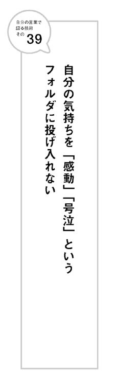
40 情報を編集することで
オリジナルをつくる
膨大な情報を新たな視点で編集することも「自分の言葉で語る」ことです。
東京丸の内の商業施設の中にある大型書店「丸善 丸の内本店」。
近隣のビジネスマンでいつも混んでいる日本有数の書店です。
その４階に書店内書店「松丸本舗」があります。
知の巨人と呼ばれる編集者松岡正剛さんがプロデュースした書店です。
まるで、松岡さんの書斎の本棚を見ているような気にさせられるディスプレイ。
普通の書店であれば隣に並ばないであろう本と本が並んでいて、行くたびに発見があり脳が刺激されます。
人間は予想しない組み合わせに喜びを感じる生き物だからです。
よく考えてみれば、置いてあるのは、普通の本です。
同じ店の他の売り場で置かれている本もあります。
その気になれば、どこの書店でも探せるものなのです（現在、手に入りにくい本もあるにはありますが）。
にもかかわらず、松丸本舗は強い個性をもつ、明らかに松岡さんのオリジナルの書店になっています。
なぜでしょう？
独自の視点で、編集されているからです。
編集とは文字通り、「集めて編む」という作業。
情報を編集することによりオリジナルを産み出しているのです。
法則集や名言集なども多くが、既にある情報を集め、編集したものです。
それでも独自の視点で編集されていればオリジナルにすることができます。
ベストセラーになった『超訳 ニーチェの言葉』（ディスカヴァー・トゥエンティワン 白取春彦訳）もそうです。
もともとはニーチェの言葉であっても、ちゃんとオリジナルの言葉になっています。
既にある情報であっても、独自の切り口で編集することで「自分の言葉」にすることができるのです。
41 「ひとりディベート」をしてみる
ディベートとは、あるテーマについて、賛否２つの立場にわかれて討論することを言います。
それを自分ひとりの頭の中で実施するのが「ひとりディベート」です。
あるテーマに関して、賛成と反対、それぞれの立場に立って自分の頭の中で議論を行うのです。
特定のテーマに関して書いたり話したりしなければいけないときに、一方向の立場だけから語るだけでは、説得力がありません。反対側の意見も踏まえた上で、あなたの意見が述べられると、文章や語りに厚みが出ます。
普段からひとりディベートの習慣をつけておくのがいいです。
テーマは何だってかまいません。
時事的な問題でもいいし、哲学的な問題でもいい。
いきなり難しいテーマだと言葉が浮かんでこないかもしれません。
まずはランチに何食べようとか、書店で本を買うべきか買わないべきか、など日常的なささいな選択の場面から使ってみるのがいいでしょう。
たとえばあなたがランチでラーメンを食べようと思ったとします。
賛成派と反対派を頭の中で討論させるのです。
賛成派がラーメンを食べたときの快感について語れば、反対派はすかさずカロリーや健康面について語る。
賛成派が「夜は小食にするから」と主張すれば、反対派は「今までそんなことできたことがあるか？」と過去の統計をもち出す。
普段も頭の中でぼんやりやっているかもしれませんが、改めてちゃんと言葉として戦わせてみるのです。
普段からひとりディベートの習慣をつけておくと、より複雑なテーマについて語らなければいけないときに役に立ちます。
慣れてくれば、テレビで話題になっているようなテーマについてひとりディベートしてみましょう。原発問題。消費税問題。何でもいいです。
ポイントは、自分が普段考えている主張に、反対する人間を頭に登場させるということです。
一般的に人は、自分の主張する立場を盲目的に支持してしまいがちです。反対側の意見を聞いても「それは些細な問題だ」と切り捨ててしまうのです。
それでは説得力のある主張は産まれません。
反対の主張を組み入れた上で、相手を論破できる主張を語れるということは、その人自身の言葉になっているということです。

42 ヘーゲルの弁証法を文章に取り入れる
「ひとりディベート」するときの思考の過程を文章に取り入れましょう。
まず冒頭で自分の意見を述べます。
次に自分の意見を否定する反論を述べます。
さらに、その反論を論破し、最初の意見に比べてさらに高い次元の新たな自分の意見を展開するのてす。
これはドイツの哲学者ヘーゲルによる弁証法を取り入れた構成です。
ヘーゲルは３段階の意見を次のように名づけました。
最初の意見 ＝ テーゼ
反論 ＝ アンチテーゼ
より高い次元の意見 ＝ ジンテーゼ
これは、植物にたとえると、「つぼみ」「花」「実」という言い方もできます。
最初の意見である「つぼみ」は「花」ができたことによって否定されます。さらに「花」も「実」ができたことによって否定されます。しかし、「つぼみ」「花」があるからこそ、「実」は産まれるのです。
たとえば以下のようなものが、弁証法を使った文章構成です。
（自分の意見 ＝ テーゼ・つぼみ）
借り物の言葉を使わずに自分の言葉を使うべきだ。
（それに対する反論 ＝ アンチテーゼ・花）
自分の言葉が簡単に出てこないからこそ借り物の言葉を使ってしまうのだ。
（次元の高い意見 ＝ ジンテーゼ・実）
だったら一度誰かの言葉を借りて、それを自分の頭の中で消化し別の表現にすることで自分の言葉にしよう。
一度、自分の意見を否定することで、文章に説得力が増すのです。
またこの構成は、簡単なスピーチをするときなどにも威力を発揮します。
覚えておいて損のない手法です。
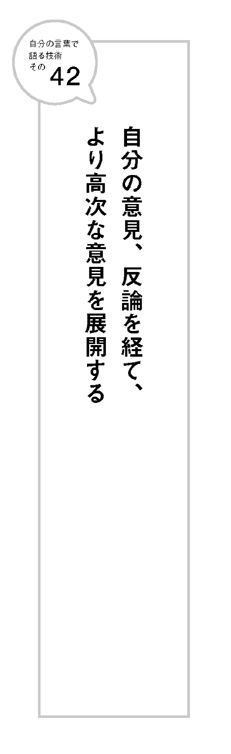
43 同じ写真に、正反対の意見の
キャッチコピーをつける
同じビジュアルに２種類の違うキャッチコピーを付け加えることで、まったく主張の違うポスターに仕上げる。
以前、専門学校でコピーライティングの講師をしていたときによく出題した実習です。
ひとりディベートをさらに進化させて、表現にしてみるのです。
教材としてよく使わせてもらったのは１９９０年代に一世を風靡したベネトンの広告。
ファッションメーカーでありながら、ビジュアルは、人種差別、戦争、ＨＩＶなどをテーマにしたオリビエロ・トスカーニの過激な写真。文字は小さくベネトンのロゴマークが入るだけ。コピーにあたるものは何もない。読み手の想像力にゆだねる広告でした。
そこに２種類のキャッチコピーを入れることで、できるだけ正反対の主張をもったポスターに仕上げます。
いろいろな答えが出て、おもしろい実習なのですが、ある女子学生の答えに感心したことがあります。
ビジュアルは、子どもが３人並んで舌を出している写真。３人の肌の色が違います。それぞれ、ヨーロッパ系、アフリカ系、アジア系。一般的には「肌の色は違っても舌の色は同じだよ」という意味がこめられた写真だと認識されています。
このビジュアルを生かし「人種差別反対」と「人種差別賛成」の２つの団体から仕事の依頼が来たという設定で、同じ写真に別のコピーをつけてもらったのです。
その女子学生は、以下のようなコピーをそれぞれ書きました。
ほら同じでしょ。（反対派団体向けのコピー）
ほら違うでしょ。（賛成派団体向けのコピー）
言葉は「同じ」と「違う」の違いだけ。
なのに写真がぜんぜん違って見えてくるから不思議です。
「ほら同じでしょ」と書かれていると、３人とも肌の色も性別も違うけど、人類という共通項があることで同じに見えます。
「ほら違うでしょ」と書かれていると、３人の肌の色の違いばかりが強調され、ぜんぜん違う生物のように見えるのです。
よく絵や写真は字よりも訴えかけるものが多いと言います。しかし、同じ絵や写真であっても、言葉が違えば、１８０度違うものに見える可能性もあるのです。
言葉の力は、それだけ強いのです。
44 ハーバード白熱教室が白熱して
小学生のディベートが白熱しない理由
「海に漂流し飢えで苦しむ船乗りは、瀕死の少年を殺しその肉を食べ生き延びた。この行為は道徳的に許されるか？」
「ビル・ゲイツやイチローの年収は高すぎるのかそれとも適正なのか？」
このような刺激的な問いかけからはじまるマイケル・サンデル教授の「ハーバード白熱教室」。日本では２０１０年にブームになり、東日本大震災後も人気は続いています。
実際にテレビでその討論を見ていると、ぐいぐいと引き込まれていきます。
では、なぜ、サンデル教授の授業は白熱し、引き込まれるのでしょう？
哲学という高度に抽象的な題材を議論するにもかかわらず、サンデル教授は必ず冒頭のような具体例を出して質問します。
それが白熱する理由です。
永遠に完成しない「正解のない教科書」をみんなでつくっているという感覚。
こっちの意見が優勢かと思ったら、ある人間の意見で空気が変わることもあります。まるでオセロゲームのように。
かといって、全面黒になったり白になったりすることはありません。オセロゲームでどんなに実力差があっても、少しは陣地が取れるように。
先日、小学６年生の息子の授業参観を見に行きました。
内容がディベートだと聞いたからです。
話されていたテーマは「原発の是非」。
これが何ともつまらないのです。
原発廃止派は「危険だからなくした方がいい」。
原発存続派は「じゃあ電気がなくなってもいいのか？ 産業はどうなるんだ？」
大人の議論の焼き直し。具体例がない。
でもそれは仕方ないことです。身をもって体験できないテーマなのだから。
結局、声が大きいという理由で原発推進派が勝ちました。
教室全体が何とも言えない微妙な空気につつまれました。
そもそもそんなテーマを話し合っても、小学生から出てくる意見なんてたかが知れています（大人から出てくる意見でもたかが知れているテーマです）。
自分の体験以上のものを語るとしたら、借り物の言葉で喋るしかないからです。
テレビで誰もが言っていることの焼き直しの意見しか出てきません。
たとえばこんなテーマでディベートしたらどうだったでしょう。
「女と男はどちらが偉いか？」
小学生ならとりあえず盛り上がります。
みんな毎日体験し、意識していることだからです。
具体的な言葉が出てくるでしょう。
際どいフレーズも出てくるかもしれません。
自分が所属している性別が偉いと主張する必要はありませんが、「どちらも偉い」なんて優等生な発言はここでは禁止です。
自分が偉いと思う方の性の「偉い部分」を語ります。
おそらく反対側からすぐ論破されてしまうでしょう。
でもそこがおもしろい。
ひと通り議論が終わった後、今度は立場を正反対にしてディベートしてみるのです。
「女の方が偉い」と主張していた人間は「男の方が偉い」と主張する。
「男の方が偉い」と主張していた人間は「女の方が偉い」と主張する。
逆の立場から見たら、先程、「○の方が偉い」と言っていた論拠が、いかにつまらないものかがわかるはず。
結果として、どちらも偉いことが身をもってわかるのです。
45 「具体的」に書く、話す
ボキャブラリーのない子どもは、何かの感想を聞いてもいつも「おもしろかった」で済ませます。
「遠足どうだった？」「おもしろかった」
「映画どうだった？」「おもしろかった」
これを大人になってからもやる人がいます。
何に対しても「おもしろかったです」と言うだけ。
これほどおもしろくない感想はありません。
自分の言葉になっていないからです。
どこがどうおもしろかったのかを具体的に語ることで、人とは違うオリジナルの言葉になるのです。
特に、誰かにお礼を言ったり、感想を言ったり、何かをほめたりするときなど、漠然とした言葉では伝わりません。具体的になればなるほど、うれしいポイントであればあるほど、相手に伝わるものが大きくなります。
たとえば私は、本を読んだ方から感想の手紙やメールをいただくことがあります。
感想を見れば仕事ができるかどうかわかります。
漠然とした感想では、あまり心が動きません。
仕事ができるなという人は、感想もするどい。
具体的で、ほめ方の目のつけどころがいいのです。
文章を書くとき、抽象的な言葉を使ったら、「たとえば」と続けて具体例や自分が体験したエピソードを書く習慣をつけましょう。
抽象的な言葉は、どうしてもみんな似てしまいがちになります。
「たとえば」ではじまる、具体例やエピソードは、書き手それぞれによって異なります。
その人が体験したエピソードは、他の人には絶対に書けないものです。
文章だけでなく話し言葉でも同じです。
就職の面接などで自己ＰＲをするときも、できるだけエピソードで語りましょう。
エピソードこそが、あなたオリジナルの「自分の言葉」なのです。
46 「抽象化」して書く、話す
具体化する能力と同じくらい、抽象化する能力も大切です。
抽象化とは、具体的な例やエピソードの中から、特定の視点から見つけた共通する特徴や考え方を抜き出し組み立てることを言います。
小学校から高校くらいまでに習う勉強では、多くの公式が出てきます。
公式とは、具体的な例を集めて法則として抽象化したものです。
先人たちが具体例を一つひとつ調べていく中で、抽象化できることに気づいてくれたものが公式です。
数学や理科だけではありません。
社会などの科目でも同じです。
たとえば、地理で出てくる気候の区分。瀬戸内式気候という言葉は最初からあったわけではありません。瀬戸内海沿岸の各地の気温や降水量を測定し、共通の特徴（温暖で少雨）を見出したことで、抽象化されたものなのです。
われわれが学校で効率よく勉強できるのは、あらかじめ抽象化してくれている教科書があるからです。
効率がいい代わりにそこには発見がありません。誰かが抽象化したものだからです。自分で具体例から抽象化したプロセスがないからです。
学校を出たら、自分で物事を抽象化できないか考えましょう。
わかりやすいのは、自分で発見した「法則」「公式」をつくることです。
47 「たとえば」と「要するに」を
往復運動させる
「具体化」も大切。
「抽象化」も大切。
「具体化する能力」が不足していても、「抽象化する能力」が不足していても、困ったことになってしまいます。
たとえば、小学生がテストの問題でまったく答えを書けないケースは、大きくわけると以下の２つです。
①問題の意味がわからない。
②どう答えればいいかわからない。
①は、問題を身近な例に置き換える能力。すなわち「問題を具体化」する能力が不足しているのです。
②は、問題を一般化して形にする能力、つまり「問題を抽象化」する能力が不足しているのです。
①を口にする生徒には「問題を具体化」して教える。
②を口にする生徒には、「問題を抽象化」する方法を教える。
子どもの口癖によって教え方が変わってくるのです（「うちの子は両方」という場合も多いかもしれませんが）。
文章を書く場合や人前で話す場合も、「具体化」と「抽象化」の両方が必要です。
よく理解できる文章やスピーチは、具体化と抽象化が交互に行われています。
抽象的な表現が出てきたら、「たとえば」という言葉で具体例が出てくる。
具体例が出てきたら、「要するに」という言葉で抽象化される。
「たとえば」と「要するに」を、あなたの頭の中で往復させていくと、文章や話に厚みが出ます。
「具体化」するときに、あなたならではの事例が出てきます。
「抽象化」するときに、あなたならではの法則が産まれます。
つまり、あなただけの「自分の言葉」で語ることができるのです。
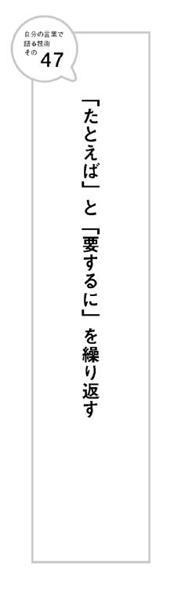
48 誰かに取材インタビューしてもらう
私は、自分が取材する立場になるときも、メディアなどから取材される立場になるときもあります。
どちらもとても勉強になります。
自分が取材する立場のときは、相手から話を聞くわけなので、勉強になることは理解していただけると思います。新しい情報を得ることができるからです。
一方、取材される側が勉強になるというのは、実際そのような機会がないと理解しにくいかもしれません。
なぜ人の質問に答えることが勉強になるのでしょう？
取材されて話していると、必ず新しい「自分の言葉」を発見するからです。
聞き手からの質問に答えていくことによって、頭の中でモヤモヤとしていたものが整理されて新たな考えや言葉になっていくのです。
しゃべりながら、「へぇ～、自分はこんなこと考えていたのか！」と発見するときは快感です。
インタビュアーがうまければうまいほど可能性が高まります。
もうひとつ勉強になるのは、無茶なテーマで取材を受けたときです。
専門のテーマであればいいのですが、ビジネス書を書いていると、時として「なぜ私にこのテーマで？」というような取材の申し込みが来ることがあります。
そのような場合でもスケジュールが合えばできる限り受けるようにしています。
なぜならとても勉強になることがわかったからです。
よく知らないテーマだから、事前にいろいろと調べます。
するとぜんぜん関係ないテーマだと思っていたことが、実は自分の関わっているテーマと関連があることがわかります。当たり前といえば当たり前。そう思ったからメディア側は取材を申し込んできたのです。
無茶だと思っていたテーマについて語ることで、自分の中に眠っていた新たな鉱脈を発見することになります。
新しいテーマについても「自分の言葉」で語れるようになるのです。
取材を受けることで「自分の考えや言葉を発見する」という感触を味わってもらいたくて、私はセミナー講師を頼まれたときに、以下のようなワークショップをよく取り入れて実施します。
受講者が隣同士２人１組になって、交互に取材する側と取材される側を体験してもらうのです。
隣の人がタレントで自分がマネージャーになったと仮定して、隣のタレントを多くの人に売り込むストーリーやキャッチコピーを考えるというワークです。
もちろん、自分がタレント側の立場にもなります。そのときは、隣の人がマネージャーとして自分のストーリーやキャッチコピーを考えてくれます。
このワークは、受講者からいろいろな発見があると好評です。
まず滅多に味わえない取材されるという体験ができること。
話しているうちに「自分の考え」がまとまってくる快感を味わえます。
次に、相手が自分の話のどこに焦点をあてストーリーを組み立てたかがわかるので、他人から見た自分の強みを教えてもらうことができるということ。
多くの場合、他人からの視点によって、今まで自分では気づいていなかった「強み」を発見することができます。自分で考えるよりも「自分らしい言葉」を教えてもらえることもあります。
また、自分が取材される立場を経験すると、人に取材するとき、このように訊けばいいのか、という気づきを得ます。
隣の人が自分のことを売り出す発表を聞いているときはみんな、ちょっと恥ずかしそうな、でもとてもうれしそうな表情をします。
もちろん、そのようなワークを受けなくても、誰か頼める人がいればいつでも可能です。２人１組で取材して取材されごっこ。楽しいですよ。
49 企画の内容よりも
「何かやってくれそう」と感じさせる
以前、広告代理店に勤めていたとき、大先輩で不思議なＣＭプランナーがいました。
仮にＧさんとします。Ｇさんのプレゼンに何度か同席したことがあります。
彼がテレビコマーシャルの企画の説明をするのですが、何を言っているかよくわからないのです。「パッと」とか「グッと」とか擬音が多いのが特徴で、迫力はあるのですが、日本語として論理がまったく通っていない。
得意先の人たちもちょっと困った風。ヘタに質問しようものならば、Ｇさんからギロリとにらまれて、またよくわからない日本語の返答が返ってくるからです。
こんなＧさんですが、プレゼンの勝率は驚くほど高かったのです。かなりの数の競合がいても勝ってしまいます。
なぜでしょう？
もちろん企画のよさもありますが、何よりもＧさんが「自分がもってきた企画」をこれしかないと信じ込んでいたからです。それだけ自分の企画を信じ込んでいるＧさんの覚悟にかけてみよう、という気分に得意先をさせたのです。
Ｇさんにとっては、論理的には意味が通らない感覚的な日本語こそが、「自分の言葉」だったと言えます。
ただこの話、ちょっとしたオチがあります。
Ｇさんが活躍していたのは大阪支社でした。その後、東京本社に異動になったのですが、そこでは大阪の頃に比べて、あまり活躍できなくなりました。
なぜでしょう？
大阪では得意先にオーナー企業が多かったのです。ＣＭのプレゼンには社長も出席します。Ｇさんは直接社長と話して、社長の心をつかむのが得意でした。
オーナー企業の創業社長も感覚で喋る方が多いのです。
お互い何を言っているかよくわからないのですが、なぜか意気投合するのです。
東京ではそうはいきません。宣伝部にプレゼンし、そこから社長などの幹部に上げていきます。そうなると、Ｇさんの企画は急に輝きを失ってしまったのです。
この話は示唆に富んでいます。
たとえば、あなたが得意先にプレゼンするときで考えてみましょう。
出席者に社長などの最終決定者がいる場合は、もっていく企画について「これしかない」とまず自分を信じ込ませることからはじめましょう。ロジックよりも思い入れで勝負するのです。
逆に出席者に最終決定者がいないのであれば、気合を入れすぎても空回りするだけです。ロジックを重視し、現場の担当者が決定者に説明しやすいようなキーワードを設定しておくなどの工夫を優先しましょう。
会議で誰かが何かを提案した。一応、根拠は示されている。それに対してあなたは意見を求められた。
こんなとき、「いいと思います」「よくないと思います」とだけ言う人がいます。
これではただの感想です。
何も言っていないのと同じです。
他の出席者からは、「自分の言葉」をもっていないと軽く見られてしまいます。
他人の意見に意見を言うときこそ（それが同意であれ反論であれ）、ちゃんと根拠を示す必要があります。
なぜなら、根拠のない感想に対しては、同意することも反論することもできないからです。するとただの感情論になってしまいます。
何か意見を言った後には、「なぜなら......だからです」という文を続けるくせをつけましょう。
意見と根拠をセットにして語るだけでも、ちゃんと自分の意見をもっているように思われます。
51 名言は自分でつくる
名言集がブームです。
書店に行くと、名言を集めた本が数多く並んでいます。
名言の効用は本書でも取りあげました。
読むと元気づけられるし、文章を書くときや、人前でスピーチするときなどにも「名言」は便利です。
ただし、人の名言ばかりを引用するのはちょっとさみしい。
それは他人の言葉だからです。
どうせだったら、自分の言葉の名言集をつくりたいものです。
自分が名言を語れるようになるとうれしくないですか？
最初はマネからでもいいです。
誰かの名言の一部を変えるだけでもいい。
訓練していくうちに自分で「名言」が言えるようになります。
世界にひとつ。自分の言葉の名言集をつくりましょう。
52 無駄なフレーズが人生を変える
仕事をしている人であれば、１日のうちに数多くのビジネスメールを受け取っていることでしょう。
私も毎日それなりの数のメールを受け取ります。
ビジネスメールは人それぞれ書き方に個性があっておもしろい。
ものすごく丁寧な人もいれば、乱暴な書き方をする人もいる。
会って話しているときはロジカルなのにメールではあやふやな書き方をする人。
普段はすごく愛想がいいのにメールだと急にぶっきらぼうになる人。
いつもは寡黙なのにメールだと急にイキイキ饒舌になる人。
長い文章なのに肝心な情報が抜けている人。
即レスしてくる人。一定の間隔があく人。忘れた頃に返事してくる人。
私はというと、基本、相手に合わせます。
丁寧な人には丁寧に、乱暴な人には少し乱暴に。
即レスする人には即レスで。時間がかかる人には時間をかけて。
もうひとつ意識していることがあります。
ＰＳなどで、できるだけ用件以外の無駄なフレーズを入れるようにすることです。
ビジネスメールの教科書などには、「メールは簡潔に」「無駄なことは書くな」などと書かれていることが多いようです。
確かに正しいことかもしれません。
でも、私は無駄の中にこそ、何か繫がりが産まれる可能性があると信じています。
だから、何か思いついたら用件とは関係のない無駄なフレーズを書きます。
実際、そこから仕事に繫がることもあります。
出版社クロスメディア・パブリッシングとは、本書が５冊目の本になります。
はじめて出した本のきっかけは、３年前社長のＫさんとたまたま会って名刺交換し、メールを送ったことでした。そのメールの署名欄に書いていた当時の私のキャッチフレーズ「ビジネスをエンタテインメントに！」という言葉に、なぜかＫさんはピンときたのです。Ｋさん自身も同じような思いを抱いていたからです。そして再び会うことになり、出版が決まったのです。
無駄なフレーズがなければ、５冊の本は世に出てなかったかもしれません。
「お世話になっています」「お疲れさまです」「よろしくお願いします」などの定型文は何も産み出しません。
定型から外れた無駄なフレーズこそ、あなた自身の言葉です。
そのひと言が人生を変えることだってあるかもしれないのです。
53 マニュアルにない言葉が
「自分の言葉」になる
全日空の機長山形和行さんをご存知でしょうか？
私は数年前に人から聞いて山形さんの存在を知り、全日空機便に乗るたびに期待するのですが、まだ遭遇したことはありません。
山形さんは、ファンクラブもあり、全国で講演にも呼ばれる名物機長です。
飛行機に乗っていて、機長が誰かということを気にする人はあまりいないでしょう。
なぜ山形さんにはファンが大勢いるのでしょう？
それは言葉の力です。
山形さんの機上アナウンスが独特だからです。
通常の機長のアナウンスは決まった型があります。到着空港の天気、気温、到着時間などを語り、「途中揺れることもありますが運行には支障ありません。狭い機内ですがごゆっくりおくつろぎください」という言葉で締めくくるものです。
山形さんのアナウンスは定型とは違うものです。
揺れのことを「天使のいたずら」という詩的な言葉で表現したり、窓から見える景色を解説してくれたり、俳句まで詠むのです（詳しくは「山形機長」で検索すればいろいろな方がブログに書かれています）。
機長アナウンスについて、航空会社のマニュアルでどれくらい規制があるのかはわかりません。ただマニュアルにないことを最初に言うのは勇気が必要です。
おそらく、山形さん自身、どうしても「自分の言葉」をお客さんに伝えたいという気持ちからはじめたのでしょう。
リスクをおって続けた結果、ファンが大勢でき、講演に呼ばれるような名物機長になったのです。
東日本大震災から数日後の朝、東急電鉄東横線の車掌が車内アナウンスで語ったと言われる言葉がツイッターで広まりました。
「大変なことになってますが、ここが頑張りどころです。みんなで力を合わせて乗り切りましょう！」
多くの人が心を動かした言葉や行動の多くは、マニュアルにないものでした。
自分の頭で考え、リスクをおったのです。
54 幻になったＣＭが、未来の
コミュニケーションの形を暗示する
東日本大震災が原因で、オンエアが中止になったＣＭは数多くありました。
その中で、最も話題になったのは九州新幹線全線開通のＣＭです。
３月12日開通のまさに前日、地震が起きたのです。
本来ならば一大キャンペーンになるはずだったＣＭは、３日間だけ九州地区でオンエアされただけで終わりました。自粛ムードの中、ＪＲ九州が翌日の式典とＣＭの中止を決定したからです。
ひと昔前であれば、そのままお蔵入りになり知る人ぞ知る伝説のＣＭとなるだけだったかもしれません。
ソーシャルメディア時代の現在においてはそうはなりませんでした。
ユーチューブにアップされたＣＭは、震災で沈む日本を元気にする映像として、ブログ、ツイッターで全国に広まっていったのです。
「祝！ 九州」というテロップからはじまる１８０秒ＣＭは、鹿児島中央駅から博多駅まで通常のスピードよりゆっくり走る新幹線から、思い思いの仮装をした人々が沿線や駅で手を振ったりウェーブしたりする姿をひたすら映していきます。
開通の半月前の２月20日に実施された「祝！ 九州縦断ウェーブ」というイベントを、新幹線の中から撮影し編集したものです。
イベントはテレビやＨＰで告知され、小雨だったにもかかわらず２万人近くの人々が沿線に集まり、７色にラッピングされた（九州７県を表現）撮影用新幹線に向かって手を振ったりウェーブしたりしました。
途中「祝！ ○○（駅名）」というテロップが入るだけ。マイア・ヒラサワの曲に乗って映像がひたすら流れます。最後の10数秒までナレーションもありません。
にもかかわらず、何度見ても飽きずに、心が熱くなってしまいます。
なぜでしょう？
手を振りウェーブをしている人たちが、本当に純粋に楽しんでいるからです。子どもが思いっきり遊んでいる姿を見るとそれだけでうれしくなってくるように、人は人が純粋に楽しんでいる姿を見ると、大きく心が動かされるのです。
このＣＭは多くの人からリクエストされＤＶＤにもなりました。また６月に開催されたカンヌ国際広告祭でも、アウトドア部門の金賞をはじめ、３部門で賞を取りました。
コンテンツとして、映像に感動するＣＭはこれまでにも多数ありました。
「九州新幹線」のＣＭはその感動とは種類が違います。
従来のＣＭの考え方とはまったく違うコミュニケーションの形になっています。
これからの企業と生活者のコミュニケーションのあり方を暗示しています。
一般的にＣＭはできるだけ偶然的要素を排除し、完成度を高めるものです。
あくまで主役は商品です。
このＣＭでは、商品である新幹線はほとんどと言っていいほど映りません。
開通を喜ぶ人々の表情が映し出されるだけ。
集まってきた人々が主役なのです。
何の報酬があるわけでもないのに（ＣＭに映る保証などもない）、みんなただ楽しいから自主的に集まってきたのです。
ここがポイントです。
これからの時代、企業は生活者にどれだけ「楽しい場所」を提供できるか、どれだけ多くの人を巻き込んでいけるかが肝になっていくでしょう。
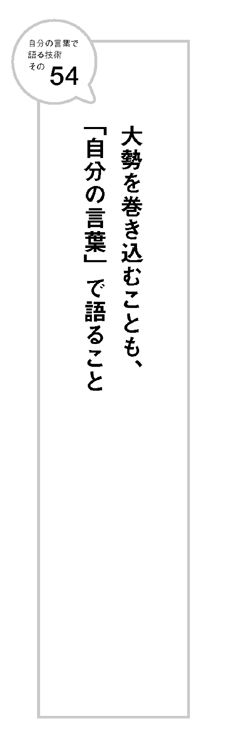
55 生活者に未来のストーリーを想像させる
あなたが商品を売ろうとするとき、相手にスペックや機能を説明することばかりを考えていませんか？
物があふれている日本で、そのような売り込み方をしてもなかなか生活者の心を捕らえることは難しい。またそれでは誰が喋っても同じ言葉になります。
あなたがすべきことは、商品の説明ではなく、商品を手に入れたときにどんな未来が待っているかのイメージをお客さんに共有してもらうことです。
参考になるのは、ジャパネットたかたの高田明社長のトークです。
高田さんは、商品のスペックや機能で商品を売ろうとしていません。
お客さんが実際にその商品を買った後に、日々の生活でどのような変化があり、どんな楽しい未来が待っているかのイメージがわく語りをします。
たとえばＩＣレコーダー。以前はビジネスユースでしか売れないというイメージだったのを、主婦向けに売って大ヒットさせました。
共働きで外出してしまうお母さんが、子どもへの伝言に使えばいいですよという提案を、未来の情景が思い浮かぶように語ったのです。
商品の説明をするだけならば誰が語っても同じです。
お客さんが商品を使う未来のストーリーを語れば、オリジナルの言葉になるのです。
56 １００人いれば１００通りの
「自分の言葉」がある
「自分の言葉とはこういうものである」という決まった定義はありません。
１００人いれば１００通りの自分の言葉があっていいのです。
大切なのは、「言葉をちゃんと自分の腹に落としてから語っているか」ということです。
言うのは簡単ですが、すべての場面で自分の言葉で語ることは難しいことです。
私自身、今でも仕事で、「自分の言葉で喋っていないな」と感じるときがあります。
たとえば、会社と会社の間に入って何かを説明しなければならないとき。
片方の会社からは「できない」と言われ、それを別の会社に伝えなければいけないような場面。
また片方の会社から上がってきた案を、別の会社に説明して勧めなければいけないような場面。
どちらも、自分自身で１００％納得していないのに、立場上、誰かに伝えなければいけないような場面です。会社員の方は、よく体験する場面ではないでしょうか？
自分の言葉で語れなかったとき、気持ちはどんよりと曇ります。
たとえ表面上は先方が納得してくれたとしても、何だか心が晴れません。
あとから、「あれもう一度やり直させてください」と自分から連絡することもあります。
逆にちゃんと自分で腹落ちして語ったときは、たとえそれが先方に受け入れられなくても、気持ちはさっぱりします。

57 人生のまえがきを早く終わらせる
本にとって「まえがき」はとても大切です。
そこで読者の心をつかまないと、本文を読んでもらえないからです。
まえがきがうまく書けないと、本文を書きたくない気持ちはとてもわかります。
だからと言って、まえがきで止まっていると本文に行けません。
まえがきは本文をすべて書き終えたあとに、書き直すという宿命があります。なぜなら以下のようなことがよく起こるからです。
本のタイトルが当初想定していたものと変わった。
時代の空気が変わった。
本文の内容が微妙に変化した。
本書でも、本文が終わった後に、まえがきを何度も何度も書き直しました。
最初に「仮」で書いたまえがきとはまったく違ったものになりました。
だから最初は見切り発車でいいのです。「仮のまえがき」でいい。
まえがきが決まらないからと、書き直し続けている人は、永遠に本文を書けません。
人生も同じです。
まえがきばかりで止まっていませんか？
たとえ自分の思い通りの言葉で語れていなくても、「仮」でもいいので、まえがきを早く終わらせて、本文に向かいましょう。
本当のまえがきは、本文が終わってから、ゆっくり書き直せばいいのです。
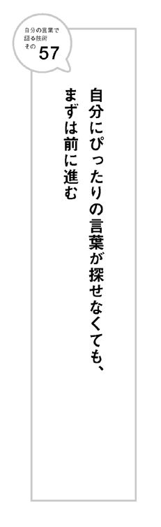
58 言葉が変わると世界が変わる
詩人アンドレ・ブルトンが物乞いに「ある言葉」を贈った話をご存知でしょうか？
私は、コピーライターの大先輩である鈴木康之さんの著書『名作コピーに学ぶ読ませる文章の書き方』（日経ビジネス人文庫）で知りました。鈴木さんは、『ロスチャイルド家の上流マナーブック』（光文社文庫 伊藤緋紗子訳）で知ったと書かれています。
言葉が少し変わるだけで世界が変わるという好例として、以下、鈴木さんの著書から引用させていただきます。
フランスの詩人アンドレ・ブルトンがニューヨークに住んでいたとき、いつも通る街角に黒メガネの物乞いがいて、首から下げた札には
私は目が見えません
と書いてありました。彼の前には施し用のアルミのお碗が置いてあるのですが、通行人はみんな素通り、お碗にはコインはいつもほとんど入っていません。ある日、ブルトンはその下げ札の言葉を変えてみてはどうか、と話しかけました。物乞いは「旦那のご随意に」。ブルトンは新しい言葉を書きました。
それからというもの、お碗にコインの雨が降りそそぎ、通行人たちは同情の言葉をかけていくようになりました。物乞いにもコインの音や優しい声が聞こえます。数日後、物乞いは「旦那、なんと書いてくださったのですか」。下げ札にはこう書いてあったそうです。
春はまもなくやってきます。
でも、私はそれを見ることができません。
言葉が少し変わるだけで、人々の物乞いに対する見方が変わったのです。
「私は目が見えません」は事実を書いてあるだけで心に響かないけど、「春の景色を見ることができない」はオリジナルの「自分の言葉」になっています。だからこそ多くの人の心に同情心がめばえ、お金を施そうという気持ちになったのです。
あなたが物乞いだとします。
下げ札の言葉を書き換えてくれる親切な人などまず現れません。
自分で言葉を考えなければなりません。
あなたなら、どんな言葉を書くでしょう？
このエピソードを下敷きに制作したのであろうショートムービーがユーチューブにアップされています。イギリスのウェブ制作会社がつくったもので「The Power of Words」というタイトルです。
映像ではアンドレ・ブルトンの代わりに若い女性が物乞いの立て札を書き換えます。
「世界はこんなに美しい。でも私にはそれが見えません」と。
映像の最後に制作会社のキャッチコピーが映し出されます。これがなかなかいい。
Change your words.
Change your world.
あなたの言葉を変えよう。
あなたの世界を変えよう。
言葉を変えれば、あなたの世界は変わります。
もちろん変わるのはあなただけではありません。
商品もお店も会社も社会も国も世界だって変わる可能性はあります。
今日から、「自分の言葉」で語りましょう。
本書のまとめ
前提条件
「自分の言葉で語っているかどうか」を決めるのは他人。
他人から見て、自分の言葉で語っているように見えることが重要。
「自分の言葉で語る」ための基本３カ条
①自分の体験から得た発見を具体的に語る。
②視点や次元を意識して変えながら語る。
③語り方の巧拙よりも伝えたい気持ちと少しの勇気。
【著者略歴】
川上徹也（かわかみ・てつや）
大学卒業後、広告会社勤務を経てコピーライターとして独立。
「言葉の力」で、会社、商品、人を輝かせるのが仕事。
2009年からは著作家としても活動。
独自の視点から語られる言葉にファンも多い。
「人生のすべてをエンタテインメントに！」がライフワーク。
著書
『仕事はストーリーで動かそう』
『あの演説はなぜ人を動かしたのか』
『明日、会社がなくなっても自分の名前で勝負できますか？』
『キャッチコピー力の基本』など。
自分の言葉で語る技術
発行日 平成24年１月15日
著 者 川上徹也
発行者 小早川幸一郎
発 行 株式会社クロスメディア・パブリッシング
〒１５１－００５１ 東京都渋谷区千駄ヶ谷４－20－３
東栄神宮外苑ビル
http://www.cm-publishing.co.jp
（本の内容に関するお問い合わせ先）
ＴＥＬ（０３）５４１３－３１４０
ＦＡＸ（０３）５４１３－３１４１
発 売 株式会社インプレスコミュニケーションズ
〒１０２－００７５ 東京都千代田区三番町20
(c) Tetsuya Kawakami 2011 Printed in Japan